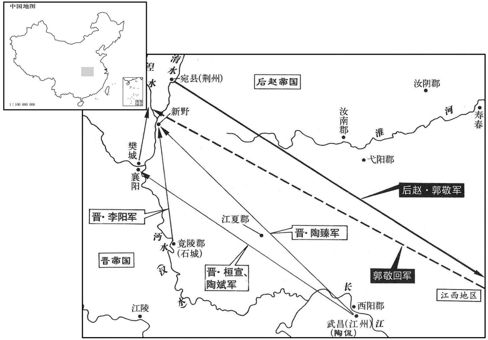
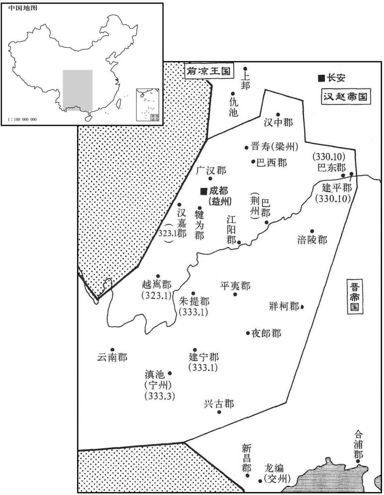
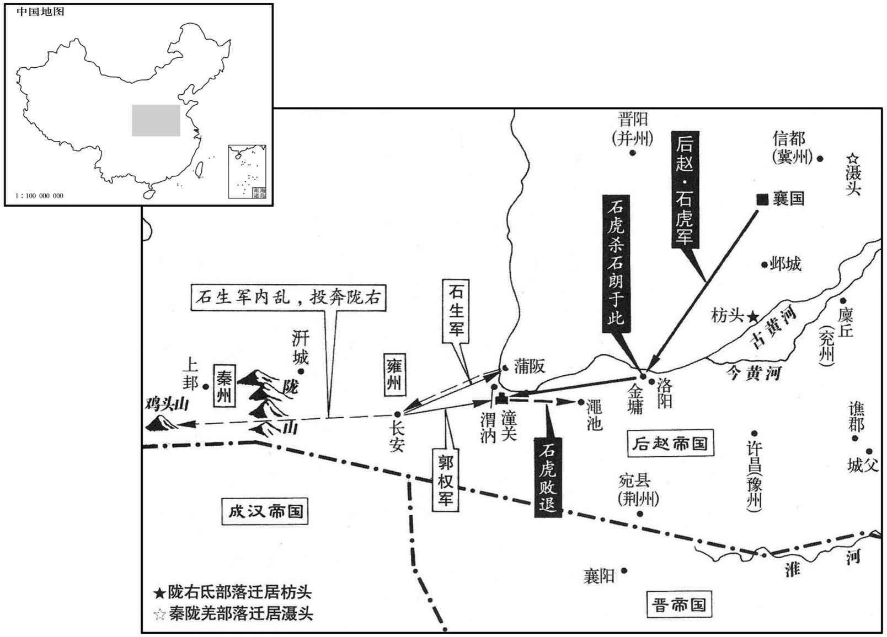
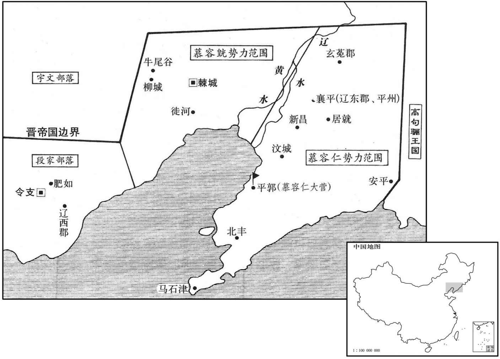
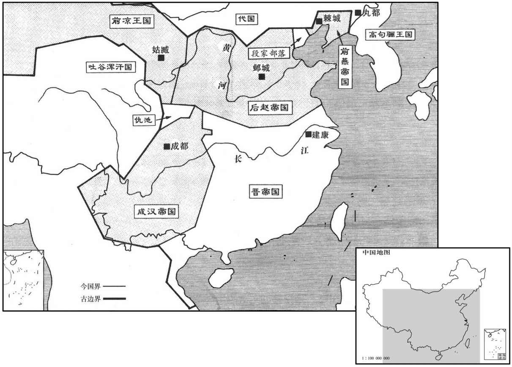

卷次与人物目录 / 卷95
资治通鉴 · 卷第九十五【晋纪十七】
公元332年至公元337年 · 原文、白话与胡三省注
本页按胡注本编排保存全卷内容。白话采用本站所据译本，未可靠对应的内容另列说明；事件标题用于定位，并非原书文字。
本卷共110段原文，107段有译文对应，3段缺译或待核对。
卷第九十五【晋纪十七】起玄黓执徐（壬辰），尽强圉作噩（丁酉），凡六年。
卷首原文与注释
显宗成皇帝中之上
公元332年 · 晋显宗成皇帝咸和七年
咸和七年〔（壬辰、三三二）〕
上传原文的注释括号有异常，字符原样保留；无法可靠划分的段落默认全文显示。
本年事件索引（现代整理）
春，正月，辛未，大赦。
春季，正月，辛未（十五日），东晋大赦天下。
赵主勒大飨群臣，〔考异曰：晋春和云：「陶侃遣使聘后赵，赵王勒飨之。」按侃与勒必无通使之理，今不取。载记云：「勒因飨高句丽、宗文屋孤使。」今但云飨群臣。〕谓徐光曰：「朕可方自古何等主﹖」〔方，比也。〕对曰：「陛下神武谋略过于汉高，后世无可比者。」勒笑曰：「人岂不自知！卿言太过。朕若遇汉高祖，当北面事之，与韩、彭比肩；〔戴溪曰：勒岂真知高帝者，特自视不如韩、彭故耳。〕若遇光武，当并驱中原，未知鹿死谁手。大丈夫行事，宜礌礌落落，如日月皎然，〔礌，落猥翻。〕终不效曹孟德、司马仲达欺人孤儿、寡妇，狐娓以取天下也。」〕狐，妖兽也，能蛊媚人。石勒以此论曹、马，使死者有知，孟德、仲达，其抱愧于也地下矣！〕群臣皆顿首称万岁。
两版字句有差异，建议核对原文。
后赵国主石勒盛大地犒赏群臣，对徐光说：“朕可以和古代哪一等君主相比？”徐光回答说：“陛下的神武谋略超过汉高祖，后代人没有可以相比的。”石勒笑着说：“人哪有不知道自己的！您的话太过了。朕如果遇到汉高祖，应当向他北面称臣，与韩信、彭越同列比肩。如果遇上汉光武帝，将会与他共同逐鹿中原，不知鹿死谁手。大丈夫行事，应当光明磊落，如同日月之光明亮洁白，终究不该仿效曹操和司马懿，欺凌他人的孤儿寡妇，靠不正当的手段夺取天下。”群臣都叩头顿首，称呼万岁。
勒虽不学，好使诸生读书而听之，〔好，呼到翻。〕时以其意论古今得失，闻者莫不包服。尝使人读汉书，闻郦食其劝立六国后，〔事见十卷汉高帝三年。〕惊曰：「此法当失，何以遂得天下﹖」及闻留侯谏，乃曰：「赖有此耳。」
石勒虽然未上学，却喜欢让众儒生读书给自己听，经常凭自己的心意议论古今得失，听到的人没有不心悦诚服的。他曾经让人读《汉书》，听到郦食其劝汉高祖册立战国时六国诸侯的后裔，吃惊地说：“这种做法应当是失策，为什么能最终夺得天下？”等到听说留侯张良劝谏，这才说：“幸亏有这么回事。”
郭敬之退戍樊城也，〔事见上卷五年。〕晋人复取襄阳，夏，四月，敬复攻拔之，〔敬复，扶又翻。〕留戍而归。
郭敬后退戍守樊城后，晋人又收复了襄阳。夏季，四月，郭敬又攻取襄阳，留下戍守兵员后返回。
赵右仆射程遐言于赵主勒曰：「中山王勇悍权洛，群臣莫及；观其志，自陛下之外，视之蔑如；〔蔑，无也，言视之若无也。〕加以残贼安忍，〔孟子曰：贼人者谓之贼，贼义者谓之残。左传，众仲曰：安忍无亲。〕久为将帅，威振内外，其诸子年长，皆典兵权；〔虎子邃、宣，勒〔皆使之典兵。将，即亮翻。帅，所类翻。长，知两翻。〕陛下在，自当无他，死非少主之臣也。〔少，诗照翻。〕宜早除之，以便大计。」勒曰：「今天下未安，大雅冲幼，宜得强辅。中山王骨肉至亲，有佐命之功，方当委以伊、霍之任，何至如卿所言！卿正恐不得擅帝舅之权耳；吾亦当参卿顾命，勿过忧也。」遐泣曰：「臣所虑者公家，陛下乃以私计拒之，忠言何自而入乎！中山王虽为皇太后所养，非陛下天属，〔载记曰：虎，勒之从子也，祖曰繊邪，父曰寇觅。勒父朱幼而子虎，故或称勒弟焉。〕虽有微功，陛下酬其父子恩荣亦足矣，而其志愿无极，〔谓虎有窥觎天位之志。〕岂将来有益者乎！若不除之，臣见宗庙不血食矣。」勒不听。
后赵右仆射程遐向国主石勒进言说：“中山王石虎勇悍而有权谋武略，群臣中无人比得上，观察他的志向，除陛下以外，对他人都视而不见。再加上性格凶暴残忍，长期出任将帅，威震内外，他的各位儿子年龄都不小，都握有兵权，陛下在世，自然应当没什么事，但恐怕他不甘心作少主的臣子。应当尽早除去他，以利国家大计。”石勒说：“如今天下没有安定，石弘年少，应当得到强大的辅佐。中山王是我的骨肉至亲，有辅佐王命的功绩，正应委付他伊尹、霍光那样的重任，何至于像你说的那样！你只是唯恐不能专帝舅的权力罢了。我也会让你参与辅政，不必过分忧虑。”程遐哭泣着说：“我所顾虑的是国家，陛下却认为是为自己打算而加以拒绝，忠言从何处能入耳呢！中山王虽然是皇太后收养的，但并非陛下的亲骨肉，虽然有些小功劳，陛下酬答他们父子的恩惠荣耀也足够了，但他的心意、欲望却没有止境，难道会是有益于将来的人吗！如果不除去他，我看宗庙将为绝祀了。”石勒不听。
遐退，告徐光，光曰：「中山王常切齿于吾二人，恐非但危国，亦将为家祸也。」他日，光承间言于勒曰：〔间，古苋翻。〕「今国家无事，而陛下神色若有不怡，何也﹖」〔怡，悦也。〕勒曰：「吴、蜀未平，吾恐后世不以吾为受命之王也。」光曰：「魏承汉运，刘备虽兴于蜀，汉岂得为不亡乎！〔以喻晋也。〕孙权在吴，犹今之李氏也。陛下苞括二都，平荡八州，〔二都，长安、洛阳；八州，冀、幽、并、青、兖、豫、司、雍也。〕帝王之统不在陛下，当复在谁！〔复，扶又翻；下同。〕且陛下不忧腹心之疾，而更忧四支乎！中山王藉陛下威略，所血辄克，而天下皆言其英武亚于陛下。且其资性不仁，见利忘义，父子并据权位，势倾王室；而耿耿常有不满之心；近于东宫侍宴，有轻皇太子之色。臣恐陛下万年之后，不可复制也。」〔复，扶又翻。〕勒默然，始命太子省可尚书奏事，〔省，悉景翻。〕且以中常侍严震参综可否，惟征伐断斩大事乃呈之。〔断，丁乱翻。〕于是严震之权过于主相，〔相，息亮翻。〕中山王虎之门可设雀罗矣。〔汉书曰：翟公为廷尉，宾客填门；及废，门外可设雀罗。师古注云：言其寂静无人行也。〕虎愈怏怏不悦。〔为后虎杀徐光、程遐张本。怏，于两翻。〕
程遐退下后，将此事告诉徐光，徐光说：“中山王经常切齿痛恨我们俩人，恐怕不仅会危害国家，也将是你我家庭的祸殃。”后来，徐光寻机对石勒说：“如今国家平定无事，陛下神色却好像有所不乐，为什么？”石勒说：“东吴、西蜀没有平定，我恐怕后人不把我当作承受天命的君王看待。”徐光说：“魏国继承汉朝国运，刘备虽然在蜀地兴起，汉朝又怎能不亡国呢！孙权在东吴，犹如现在的李雄，陛下囊括长安、洛阳二都，平荡八州，帝王的正统不在陛下，又会在谁呢！况且陛下不忧虑心腹之患，却反倒忧虑四肢之患吗！中山王凭仗陛下的威略，所向无敌，但天下人都说他的英俊威武仅次于陛下。而且他禀性不仁，见利忘义，父子都占据权位，势力可倾覆王室；自己又耿耿于怀，常有不满之心。近来在东宫侍奉宴饮，有轻视皇太子的神色。我恐怕陛下辞世之后，就不能再控制他了。”石勒默默不语，开始命令太子省查、决断尚书的奏事，又让中常侍严震参预判治可否，只有征伐断斩方面的大事才呈报石勒。此时严震的权力超过君主和丞相，中山王石虎的门庭冷清，可以罗雀了。石虎更加怏怏不乐。
秋，赵郭敬南掠江西，〔江西，谓邾城以东至历阳也。〕太尉侃遣其子平西参军斌〔斌，音彬。〕及南中郎将桓宣乘虚攻樊城，悉俘其众。敬旋救樊，宣与战于涅水，破之，〔水经注：涅水出涅阳县西北岐棘山，东南径涅阳县，又东南径安众县，又东南至新野县，东入于淯。涅，奴结翻。〕皆得其所掠。侃兄子臻及竟陵太守李阳攻新野，拔之。敬惧，遁去；宣〔【章：十二行本「宣」下有「阳」字；乙十一行本同；退斋校同。】〕遂拔襄阳。
秋季，后赵郭敬向南攻掠长江以西，太尉陶侃派儿子、平西参军陶斌及南中郎将桓宣乘虚进攻樊城，全数俘虏留守士众。郭敬回军救援樊城，桓宣和他在涅水接战，郭敬战败，桓宣夺回被郭敬劫掠的全部人员、物品。陶侃的兄长之子陶臻和竟陵太守李阳攻克新野。郭敬恐惧遁逃，桓宣随即夺取了襄阳。

侃使宣镇襄阳。宣招怀初附，简刑罚，略威仪，劝课农桑，或载鉏耒于轺轩，〔鉏，立薅所用农器也。耒，卢对翻，手耕曲木也。孔颖达曰：耒以曲木为之，长六尺六寸，底长尺有一寸，中央直者三尺有三寸，句者二尺有二寸。底，谓耒下向前曲接耜者头而着耜。耜，金铁为之。郑玄曰：耜者，耒之金也，广五寸，田器，镃錤之属。轺，音遥，使者小车驾马者也。轩，曲辀也。阑板曰轩。〕亲帅民芸获。〔帅，读曰率。〕在襄阳十余年，赵人再攻之，宣以寡弱拒守，赵人不能胜；时人以为亚于祖逖、周访。〔史终言宣守襄阳之功。〕
陶侃让桓宣镇守襄阳。桓宣招抚刚刚归降的民众，刑罚从简，威仪从略，鼓励、督促从事农桑生产，有时用轻便车装载耒等农具，亲自率领民众耕耘收获。桓宣在襄阳十多年，后赵人多次进攻，桓宣依靠既少且弱的士众抵抗防守，后赵人不能取胜。当时人认为他仅次于祖逖和周访。
成大将军寿寇宁州，以其征东将军费黑为前锋，出广汉，镇南将军任回出越巂，以分宁州之兵。〔费，扶沸翻。任，音壬。巂，音随。〕
成汉的大将军李寿侵犯宁州，让其征东将军费黑为前锋，由广汉出击，又让镇南将军任回由越隽出击，使宁州兵力分散。
冬，十月，寿、黑至朱提，朱提太守董炳城守，〔朱提，音铢时。〕宁州刺史尹奉遣建宁太守霍虎引兵助之。寿欲逆拒彪，黑曰：「城中食少，〔少，诗沼翻。〕宜纵彪入城，共消其谷，何为拒之！」寿从之。城久不下，寿欲急攻之。黑曰：「南中险阻难服，当以日月制之，待其智勇俱困，然后取之，溷牢之物，何足汲汲也。」〔溷，与圂同，胡困翻。圂，厕也，豕所居也。牢，亦犬豕所居也。言城已受围，如犬豕在圂牢中，不患其逸出也。郑氏曰：牢，闲也。必有闲者，防禽兽触啮。疏曰：养马者谓之闲，养牛羊者谓之牢。言闲，见其闲卫；言牢，见其牢固；所从之异，其实一物也。〕寿不从，攻果不利，乃悉以军事任黑。
冬季，十月，李寿、费黑到达朱提，朱提太守董炳据城固守，宁州刺史尹奉派建宁太守霍彪领兵相助。李寿准备迎击霍彪，费黑说：“城中粮食短缺，应该放任霍彪入城，让他们共同消耗谷物，为什么要阻挡他！”李寿听从他的意见。朱提城久攻不下，李寿想大举猛攻。费黑说：“南中地势险阻，难以制服，应当待以时日，等他们智慧和勇气都消磨殆尽后再攻取。他们如同圈栏中的牲畜，何必那么着急呢？”李寿不听，进攻果然失利，于是把军事事务全部委托给费黑。
十一月，壬子朔，进太尉侃为大将军，剑履上殿，入朝不趋，赞拜不名。〔上，时掌翻。朝，直遥翻。〕侃固辞不受。
十一月，壬子朔（初一），提升太尉陶侃为大将军，允许佩剑着履上殿，朝见天子不必趋行小跑，唱礼通名时不直接称呼名字。陶侃坚持辞谢，不接受。
十二月，庾戌，帝迁于新宫。〔五年作新宫，至是而成，乃迁居之。〕
十二月，庚戌（二十九日），成帝迁入新建的宫室。
是岁，凉州僚属劝张骏称凉王，领秦、凉二州牧，置公卿百官如魏武、晋文故事。〔魏武事见六十七卷汉献帝建安二十一年，晋文事见七十九卷魏元帝咸熙元年。〕骏曰：此非人臣所宜言也。敢言此者罪不赦！」然境内皆称之为王。骏立次子重华为世子。〔重，直龙翻。〕
这年，凉州的僚属们劝张骏自称凉王，兼领秦州、凉州二州牧。仿效魏武帝、晋文帝的旧例设置公卿百官。张骏说：“这不是为人臣子所该说的话。敢说这事的，罪在不赦！”然而凉州境内都称呼他为王。张骏立次子张重华为世子。
译本所载内容待核对（不作白话）
[2]赵主勒大飨群臣，谓徐光曰：“朕可方自古何等主？”对曰：“陛下
公元333年 · 晋显宗成皇帝咸和八年
八年〔（癸巳、三三三）〕
上传原文的注释括号有异常，字符原样保留；无法可靠划分的段落默认全文显示。
本年事件索引（现代整理）
- 成汉的大将军李寿攻下朱提，董炳、霍彪都投降
- 后赵主石勒派使者来与晋重归修好
- 宁州刺史尹奉归降成汉，成汉占有南中地区
- 慕容廆病卒，慕容皝继任平州
- 石勒病重，石虎矫诏控制朝政
- 石勒病卒，石虎逼石弘即位
- 后赵将领石聪和谯郡太守彭彪，各自遣使者前来晋请降
- 后赵主石弘任中山王石虎为丞相、魏王、大单于
- 宇文乞得归被手下的东部大人逸豆归赶逐，逃跑死在外边
- 成汉的建宁、柯二郡向东晋投降
- 刘太后谋讨石虎失败被杀
- 后赵河东王石生镇守关中，石朗镇守洛阳
- 石虎击败石生并攻陷关中
- 石虎分别命令众将屯军于水、陇上，派将军麻秋讨伐蒲洪
- 石虎返回襄国，实行大赦
- 慕容刚刚继位，使用刑法过于严厉
- 慕容翰、慕容仁因受猜忌出奔段氏
- 慕容仁从平郭前来奔丧论礼制
- 慕容仁起兵夺取辽东
- 郭权占据上，派使者向晋请降
- 张骏想向成汉借路去建康呈送上表，成汉主李雄不同意
- 司隶校尉景骞论礼制
- 长安失守时，敦煌郡掌管计簿的官吏耿访从汉中进入江东
春，正月，成大将军李寿拔朱提，董炳、霍彪皆降，〔降，户江翻；下同。〕寿威震南中。
春季，正月，成汉的大将军李寿攻下朱提，董炳、霍彪都投降，李寿威震南中。

丙子，赵主勒遣使来修好，〔使，疏吏翻。好，呼到翻。〕诏焚其币。〔晋虽未能复君父之雠，而焚币一事，犹足舒忠臣义士之气。〕
丙子（二十六日），后赵国主石勒派使者来与晋重归修好，成帝下诏令焚烧他带来的礼物。
三月，宁州刺史尹奉降于成，成尽有南中之地；大赦，以大将军寿领宁州。
三月，宁州刺史尹奉归降成汉，成汉全部占有南中地区。实行大赦，让大将军李寿兼管宁州。
夏，五月，甲寅，辽东武宣公慕容廆卒。六月，世子皝以平北将军行平州刺史，督摄部内；〔皝，字符真廆第三子。廆，户罪翻。皝，呼广翻。〕赦系囚。以长史裴开军谘祭酒，郎中令高诩为玄菟太守。皝以带方太守王诞为左长史，诞以辽东太守阳骛为才而让之；皝从之，以诞为右长史。〔国之兴也，其臣推贤让能；国之衰也其臣矜己忌前。骛，音务。〕
夏季，五月，甲寅（初六），辽东武宣公慕容死。六月，世子慕容以平北将军的身份摄行平州刺史职务，督察、统领境内士众，赦免囚犯。任命长史裴开为军咨祭酒，郎中令高翊为玄菟太守。慕容让带方太守王诞任左长史，王诞认为辽东太守阳骛有才能因而推让给他，慕容同意了，任命王诞为右长史。
赵主勒寝疾，中山王虎入侍禁中，矫诏，群臣亲戚皆不得入；疾之增损，外无知者。又矫诏召秦王宏、彭城王堪还襄国。〔勒以宏都督中外诸军事，盖使之镇邺。堪盖在河南。〕勒疾小瘳，见宏，惊曰：「吾使王处藩镇，〔处，昌吕翻。〕正备今日，有召王者邪，将自来邪﹖有召者，当按诛之！」虎惧曰：「秦王思慕，暂还耳，今遣之。」仍留不遣。数日，复问之，〔复，扶又翻。〕虎曰：「受诏即遣，今已半道矣。」广阿有蝗，〔广阿县，前汉属巨鹿郡，后汉、晋省；后魏复置广阿县，属南赵郡；隋改为大陆县；唐武德间，改为象城县，天宝初改为昭庆县，属赵州。〕虎密使其子冀州刺史邃帅骑三千游于蝗所。恐勒死有变，使邃游于蝗所，若捕蝗者，以为外应。帅，读曰率。骑，奇寄翻。〕
后赵国主石勒病重卧床，中山王石虎进入禁中侍卫，矫称诏令，群臣、亲戚都不得入内，石勒病情的好坏，宫外无人得知。又假传诏令征召秦王石宏、彭城王石堪回襄国。石勒病情稍好，见到石宏，吃惊地说：“我让你镇守藩镇，正是为了防备今日。你回来有人征召你呢，还是自己前来的？如果有召请你的人，应当依法处决！”石虎恐惧，说：“秦王因思慕您，暂时回来罢了，现在遣返他回去。”但仍然留住不遣返。几天后，石勒又问到石宏，石虎说：“接受诏令后当即就已遣返，现在已在半路上了。”广阿发生蝗灾，石虎秘密地派儿子、冀州刺史石邃率领三千骑兵在蝗灾区游戈。
秋，七月，勒疾笃，遗命曰：「大雅兄弟，宜善相保，司马氏，汝曹之前车也。〔前车之覆，后车之戒；戒其兄弟自相残也。〕中山王宜深思周、霍，勿为将来口实。」〔谓当如周公、霍光之辅幼孤也。勒谓此言可以絷虎之手足邪！此数语亦徐光、程遐为之耳。〕戊辰，勒卒。〔年六十。〕中山王虎劫太子弘使临轩，收右光禄大夫程遐、中书令徐光，下廷尉，〔下，遐稼翻。〕召邃使将兵入宿卫，〔将，即亮翻。〕文武皆奔散。弘大惧，自陈劣弱，让位于虎。虎曰：「君终，太子立，礼之常也。」弘涕泣固让，虎怒曰：「若不堪重任，天下自有大义，何足豫论！」弘乃即位。〔弘，字大雅，勒第二子。〕大赦。杀程遐、徐光。〔光、遐固知祸之及己，然亦不料如是之速。〕夜，以勒丧潜瘗山谷，莫知其处。己卯，备仪卫，虚葬于高平陵，〔勒卒十二日而葬，未有如是之速者也。虎既潜葬勒，其所以为身后之计者，亦不过如此，卒为女子所告，果何益哉！瘗，于计翻。〕谥日明帝，庙号高祖。
秋季，七月，石勒病重，颁布遗命说：“石弘兄弟，应当好好相互扶持，司马氏就是你们的前车之鉴。中山王石虎应当深深追思周公、霍光，不要为后世留下口实。”戊辰（二十一日），石勒死。中山王石虎劫持太子石弘让他到殿前，收捕右光禄大夫程遐、中书令徐光，交付廷尉治罪，又征召石邃，让他带兵入宫宿卫，文武官员纷纷逃散。石弘大为恐惧，自言软弱，要让位给石虎。石虎说：“君王去世，太子即位，这是礼仪常规。”石弘流着泪坚决辞让，石虎发怒说：“如果你不能承担重任，天下人自会按大道理行事，哪里能事先就谈论！”石弘于是即位，大赦天下。杀死程遐、徐光。夜间，把石勒尸体秘密瘗埋在山谷，没有人知道地点。己卯（疑误），仪仗护卫齐备，假装将石勒葬在高平陵，谥号明帝，庙号高祖。
赵将石聪及谯郡太守彭彪，各遣使来降。〔聪时镇谯城。守，式又翻。降，户江翻。〕聪本晋人，冒姓石氏。朝廷遣督护乔球救之，未至，聪丢为虎所诛。
后赵将领石聪和谯郡太守彭彪，各自派遣使者前来晋请降。石聪本来是汉族人，因被收养而改姓石。朝廷派遣督护乔球带兵救援他，还未到达，石聪等人已被石虎诛灭。
八月，赵主弘以中山王虎为丞相、魏王、大单于，加九锡，〔单，音蝉。〕以魏郡等十三郡为国，总摄百揆。虎赦其境内立妻郑氏为魏王后；子邃为魏太子，加使持节、侍中、都督中外诸军事、大将军、录尚书事；次子宣为使持节、车骑将、冀州刺史，封河间王；〔使，疏吏翻。〕韬为前锋将军、司隶校尉，封乐安王；遵封齐王，鉴封代王，苞封乐平王；徙平原严：「平原」改「太原」。】〕王斌为章武王。〔斌，音彬。〕勒文武旧臣，皆补散任；虎之府寮亲属，悉署台省要职。〔虎居邺，子邃都督中外诸军，宜据信都，府寮亲属分领台省；弘处尊位，特奇坐耳。散，悉亶翻。〕以顉军将军夔安领左仆射，尚书郭殷为右仆射。更命太子宫曰崇训宫，〔更，工衡翻。〕太后刘氏以下皆徙居之。选勒宫人及车马、服玩之美者，皆入丞相府。
八月，后赵国主石弘任中山王石虎为丞相、魏王、大单于，赐加九锡，划分魏郡等十三郡作为石虎的封国，总领朝廷大小政事。石虎赦免封国境内的囚犯，立妻子郑氏为魏王后，儿子石邃为魏太子，授予使持节、侍中、都督中外诸军事、大将军、录尚书事；次子石宣任使持节、车骑大将军、冀州刺史，封河间王；石韬为前锋将军、司隶校尉，封乐安王；石遵封齐王，石鉴封代王，石苞封乐平王。改封平原王石斌为章武王。石勒原先的文武官员，都委派闲散的官职，而石虎的僚佐亲属，全部充任朝廷要职。石虎任命镇军将军夔安兼领左仆射，任命尚书郭殷为右仆射。把太子的宫室改名为崇训宫，太后刘氏以下的人员，全部移居此处。又挑选石勒原有宫女、车马和服玩中美丽、精良和珍贵的，全部送入丞相府。
宇文乞得归为其东部太人逸豆归所逐，走死于外。慕容皝引兵讨之，军于广安；〔广安，在棘城之北。〕逸豆归惧而请和，遂筑榆阴、安晋二城而还。〔榆阴城，盖在大榆河之阴；安晋城，在威德城东南。〕
宇文乞得归被手下的东部大人逸豆归赶逐，逃跑死在外边。慕容领兵讨伐逸豆归，屯军广安。逸豆归畏惧，请求和好。慕容便修建榆阴、安晋两座城堡，然后回军。
成建宁、牂柯二郡来降，李寿复击取之。〔牂柯，音臧哥。降，户江翻。复，扶又翻；下同。〕
成汉的建宁、柯二郡向东晋投降。又被李寿攻占。
赵刘太后谓彭城王堪曰：「先帝甫晏驾，丞相遽相陵藉如此。〔陵，驾也，轹也。藉，蹈也。藉，慈夜翻。〕帝祚之亡，殆不复久，王将若之何﹖」堪曰：「先帝旧臣，皆被疏斥，军旅不复由人，〔谓虎诸子皆握兵权也。被，皮义翻。〕宫省之内，无可为者，〔谓宿卫及台省要职，皆虎之府寮、亲属，无与共谋匡者。〕臣请奔兖州，挟南阳王恢为盟主，〔恢，勒少子也，时镇廪丘。〕据廪丘，宣太后诏于牧、守、征、镇，使各举兵以诛暴逆，庶几犹有济也。〕〔几，居希翻。〕刘氏曰：「事急矣！当速为之。」九月，堪微服、轻骑袭兖州，不克，南奔谯城。〔骑，奇寄翻。〕丞相虎遣其将郭太追之，获堪于城父，〔父，音甫。」送襄国，炙而杀之。征南阳王恢还襄国。刘氏谋泄，虎废而杀之，尊弘母程氏为皇太后。堪本田氏子，数有功，〔数，所角翻。〕赵主勒养以为子。刘氏有胆略，勒每与之参决军事，佐勒建功业，有吕后之风，而不勡忌更过之。〔吕后能诛韩信、彭越，刘氏不能制虎，殆不及也。〕
两版字句有差异，建议核对原文。
后赵刘太后对彭城王石堪说：“先帝刚刚驾崩，丞相便如此欺压践踏我们，帝统的绝灭，大概不会多久，您对此将怎么办？”石堪说：“先帝原先的大臣，都遭疏远和排斥，军事大权不再由我们掌握，朝廷中也没有有所作为的人，我请求出奔兖州，挟持南阳王石恢当盟主，占据廪丘，向各地的地方长官颁布太后诏书，让他们各自起兵诛灭暴逆之人，或许还可挽救。”刘氏说：“事情很急迫了，你应当迅速行动。”九月，石堪换上平民服装，轻骑奔袭兖州，不能获胜，向南逃奔谯城。丞相石虎派部将郭太追击他，在城父执获石堪，送回襄国，用火烧灼后杀死了他。又征召南阳王石恢回襄国。刘氏的图谋泄露，石虎将她废黜并杀死，尊奉石弘的母亲程氏为皇太后。石堪本来是田氏子孙，多次建立功绩，后赵国主石勒收养他作为自己的儿子。刘氏有胆略，石勒经常和她共同决断军事，辅佐石勒建立功业，有西汉吕后的遗风，在不妒忌这方面要胜过吕后。
赵河东王生镇关中，石朗镇洛阳。〔刘胤之西奔也，石生自洛阳镇长安，朗代生镇洛阳。〕冬，十月，生、朗皆举兵以讨丞相虎；生自称秦州刺史，遣使来降。〔降，户江翻。〕氐帅蒲洪自称雍州刺史，西附张骏。〔咸和四年，洪降于虎，今以赵乱而叛。帅，所类翻。〕
后赵河东王石生镇守关中，石朗镇守洛阳。冬季，十月，石生、石朗都起兵讨伐丞相石虎。石生自称秦州刺史，派使者向晋请降。氐族统帅蒲洪自称雍州刺史，向西依附张骏。
虎留太子邃守襄国，将步骑七万攻朗于金墉；金墉溃，获朗，刖而斩之；〔将，即亮翻。骑，奇寄翻。刖，音月。〕进向长安，以梁王挺为前锋大都督。〔挺，虎之子也。〕生遣将军郭权帅鲜卑涉踭众二万为前锋以拒之，〔帅，读曰率。踭，公回翻。〕生将大军继发，军于蒲阪。权与挺战于潼关，大破之，挺及丞相左长史刘隗皆死，〔此刘隗，意即自晋奔赵者。〕虎还奔渑池，〔渑，弥兖翻。〕枕尸三百余里。〔枕，职任翻。〕鲜卑潜与虎通谋，反击生。生不知已死，惧，单骑奔长安。权收余众，退屯渭汭。〔孔安国曰，水北曰汭。杜预曰，水之隈曲曰汭，音如锐翻。〕生遂弃长安，匿于鸡头山。〔张守节曰：括地志云：鸡头山在成州上禄县东北二十里，在长安西南九百六十里。郦道元云：盖大陇山异名也。后汉书，隗嚣使王孟塞鸡头道，即此也。按原州平高县西百里亦有笄头山，在长安八百里。〕将军蒋英长安拒守，虎进兵击英，斩之。生麾下斩生以降；权奔陇右。
石虎让太子石邃留守襄国，自己带领步、骑兵七万人进攻在金墉的石朗。金墉被攻破，执获石朗，将他砍掉脚后斩首。随后向长安进发，让梁王石挺为前锋大都督。石生派将军郭权率领鲜卑涉部士众二万人为前锋拒敌，石生统领大军随后出发，屯军于蒲阪。郭权和石挺在潼关接战，石挺大败，石挺和丞相左长史刘隗都阵亡，石虎回军逃往渑池，尸体枕藉达三百多里。鲜卑族私下与石虎勾结，反戈攻击石生。石生不知道石挺已死，心中畏惧，单骑逃奔长安。郭权收聚剩余士众，退却屯军于渭水拐弯处。石生于是放弃长安，藏匿于鸡头山。将军蒋英占据长安抵抗防守，石虎进兵攻击蒋英，蒋英被杀。石生的部下杀死石生投降，郭权逃奔陇右。
虎分命诸将屯汧、陇，〔汧，苦坚翻。〕遣将军麻秋讨蒲洪。〔风俗通，麻，齐大夫麻婴之后。〕洪帅户二万降于虎，〔帅，读曰率。降，户江翻。〕虎迎拜洪光烈将军、〔前此未有光烈将军号，石虎创置也。〕护氐校尉。〔汉有护羌校尉，虎以此官授洪，使之监护群氐。〕洪至长安，说虎徙关中豪杰及氐、羌以实东方，〔说，输芮翻。〕曰：「诸氐皆洪家部曲，洪帅以从，谁敢违者！」虎从之，徙秦、雍民及氐、羌十余万户于关东。〔雍，于用翻。〕以羌帅姚弋仲为奋武将军、西羌大都督，使帅其众数万徙居清河之滠头。〔羌帅，所类翻。滠，日涉翻。水经注：清河过广川县东，水侧有羌垒，姚氏之故居也。为姚弋仲父子自滠头起兵张本。〕
石虎分别命令众将屯军于水、陇上，派将军麻秋讨伐蒲洪。蒲洪率二万户投降石虎，石虎拜授他为光烈将军、护氐校尉。蒲洪到达长安，劝说石虎迁徙关中的豪强和氐、羌等部落充实东方，他说：“众氐族部落都是我家的部曲，我率领他们归顺，谁敢违抗！”石虎听从他的建议，迁徙秦州、雍州的士民以及氐族、羌族十多万户到关东。任命蒲洪为龙骧将军、流民都督，让他居住在枋头，任命羌族首领姚弋仲为奋武将军、西羌大都督，让他们率领部众数万人迁居到清河的滠头。

虎还襄国，大赦。赵主弘命虎建魏台，一如魏武王辅汉故事。
石虎返回襄国，实行大赦。后赵国主石弘令石虎建造魏台，完全仿效魏武帝辅佐汉朝的旧例。
慕容皝初嗣位，用法严峻，国人多不自安，主簿皇甫真切谏，不听。
慕容刚刚继位，使用刑法过于严厉，国内人大多不知所措，主簿皇甫真恳切劝谏，慕容不听。
皝庶兄建威将军翰、母弟征虏将军仁，有勇略，屡立战功，得士心；季弟昭，有才艺；皆有宠于廆。皝忌之，翰叹曰：「吾受事于先公，不敢不尽力，幸赖先公之灵，所向有功，此乃天赞吾国，非人力也。而人谓吾之所办，以为雄才难制，吾岂可坐而待祸邪！」乃与其出奔段氏。段辽素闻其才，冀收其用，甚爱重之。
慕容的庶母兄长、建威将军慕容翰和同母兄弟、征虏将军慕容仁，都勇悍而有谋略，多次建立战功，深得人心；小弟弟慕容昭，多才多艺，都受到慕容的宠爱。慕容妒忌他们，慕容翰叹息说：“我从先父那里接受任职，不敢不尽力，幸好仰仗先父的在天之灵，所向披靡，这是上天助我国，并非人力所为。但别人却说这是我的力量，以为我具有杰出的才能，难以制服，我怎能坐以待祸呢！”于是和儿子出奔段氏。段辽平素早就听说他的才能，希望收为己用，所以非常宠爱、看重他。
仁自平郭来奔丧，〔汉志，平郭县属辽东郡；晋省。晋东夷校尉治襄平，崔毖之败，慕容廆以仁镇辽东，治平部。〕谓昭曰：「吾等素骄，多无礼于嗣君，嗣君刚严，无罪犹可畏，况有罪乎！」昭曰：「吾辈皆体正嫡，于国有分。〔昭自谓与仁皆正室之子，分可以得国也。分，扶问翻。〕兄素得士心，我在内未为所疑，伺其间隙，除之不难。兄趣举兵以来，〔伺，相吏翻。间，古苋翻。趣，读曰促。〕我为内应，事成之日，与我辽东。男子举事，不克则死，不能效建威偷生异域也。」仁曰：「善！」遂还平郭。闰月，仁举兵而西。
慕容仁从平郭前来奔丧，对慕容昭说：“我们平素骄纵，经常对现在继位的君主无礼，他为人刚毅严厉，自身无罪尚且令人畏惧，何况有罪呢！”慕容昭说：“我们都身为嫡子，国家应当有我们一份。兄长您素来得人心，我在宫内也没什么令人怀疑的地方，寻找机会除灭他并不难。兄长赶紧兴兵前来，我当内应，事成以后，把辽东分给我。男子汉行事，不成功则死，不能仿效慕容翰到其他地方偷生苟活。”慕容仁说：“好！”于是回返平郭。闰月，慕容仁兴兵向西进发。
或以仁、昭之谋告皝，皝未之信，遣使按验。仁兵已至黄水，〔黄水，即潢水，在棘城东北，距唐营州四百里。据载记，黄水当在汉辽东郡险渎县。〕知事露，杀使者，还据平郭。皝赐昭死。遣军祭酒封奕慰抚辽东。以高诩为广武将军，将兵五千与庶弟建武将军幼、稚、广威将军军、宁远将军汗、司马辽东佟寿共讨仁。与仁战于汶城北，〔佟，徒冬翻，姓也。汶，汉古县，属辽东郡；前书作「文」。〕皝兵大败，幼、稚军皆为仁所获；寿尝为仁司马，遂降于仁。〔降，户江翻；下同。〕前大农孙机私举辽东城以应仁。〔孙机，盖王官之避地辽东者。辽东城，即襄平城。〕封奕不得入，与汗俱还。东夷校尉封抽、护军平原乙逸、〔乙，姓也；逸，名也。姓谱：商汤字天乙，支孙以为氏。〕辽东相太原韩矫皆弃城走，于是仁尽有辽东之地；段辽及鲜卑诸部皆与仁遥相戚援。皝追思皇甫真之言，以真为平州别驾。〔皝领平州史，以真为别驾。〕
有人把慕容仁、慕容昭的密谋告诉慕容，慕容不相信，派使者查验。慕容仁的军队已到黄水，知道事情败露，杀死使者，回军占据平郭。慕容赐令慕容昭自尽，派军祭酒封奕慰抚辽东。任命高诩为广武将军，领兵五千与异母弟、建武将军慕容幼、慕容稚、广威将军慕容军、宁远将军慕容汗、司马、辽东人佟寿共同讨伐慕容仁，和慕容仁在汶城以北交战，慕容的军队大败，慕容幼、慕容稚、慕容军都被掳获。佟寿曾是慕容仁的司马，于是归降慕容仁。前任大农孙机等占据辽东城响应慕容仁。封奕不能入城，和慕容汗一块儿返回。东夷校尉封抽、护军平原人乙逸、辽东相太原人韩矫都弃城逃跑，于是慕容仁尽数占有辽东地区。段辽和鲜卑各部都与慕容仁遥相呼应和声援。慕容追忆起皇甫真原先说过的话，任命他为平州别驾。

十二月，郭权据上邽，遣使来降；京兆、新平、扶风、冯翊、北地皆应之。
十二月，郭权占据上，派使者向晋请降，京兆、新平、扶风、冯翊、北地都响应他。
初，张骏欲假道于成以通表建康，成主雄不许。骏乃遣治中从事张淳称藩于成以假道；雄许之，将使盗覆诸东峡。〔三峡在成都之东，故云东峡。〕蜀人桥赞密以告淳。淳谓雄曰：「寡君使小臣行无迹之地，〔蜀不许凉人假道，则蜀地前此无凉人之迹。〕万里通诚于建康者，以陛下嘉尚忠义，能人之美故也。若欲杀臣者，当斩之都市，宣示众目曰：『凉州不忘旧德，通使琅邪，〔江左自琅邪中兴，故以称之。使，疏吏翻。〕主圣臣明，发觉杀之。』如此，则义声远播，天下畏威。今使盗杀之江中，威刑不显，何足以示天下乎！」雄大惊曰：「安有此邪！」
当初，张骏想向成汉借路去建康呈送上表，成汉主李雄不同意。张骏便派遣治中从事张淳向成汉称臣以便借道。李雄佯装同意，却准备派盗贼将他沉于东峡。蜀人桥赞将此事秘密告诉张淳，张淳对李雄说：“我的君主让我来到这未曾通行的地方，不远万里向建康表达诚意，是因为陛下嘉许和崇尚忠义，能够成人之美的缘故。如果想杀我，应当在都市处斩，向众人宣谕晓示说：‘凉州不忘国家旧恩，与晋互通使节，因为君主圣贤、臣下明察，发觉此事因而杀了他。’这样，道义的声誉就会远远传播，天下人都懔畏风威。现在如果让盗贼把我杀害在江中，声威和刑罚都不彰显，怎么能示范天下呢！”李雄大吃一惊，说：“哪有这种事呢！”
司隶校尉景骞〔蜀置司隶校尉于成都。〕言于雄曰：「张淳壮士，请留之。」雄曰：「壮士安肯留！且试以卿意观之。」骞谓淳曰：「卿体丰大，天热，可且遣下吏，小住须凉。」〔须，待也。〕淳曰：「寡君以皇舆播越，梓宫未返，〔谓怀、愍蒙尘，卒之见害，梓宫未返也。〕生民涂炭，莫之振救，〔振，举也。〕故遣淳通诚上都。〔上都，谓建康也。〕所论事重，非下吏所能传；使下吏可了，则淳亦不来矣。虽火山汤海，犹将赴之，岂寒暑之足惮哉！」雄谓淳曰：「贵主英名盖世，土险兵强，何不亦称帝自娱一方﹖」淳曰：「寡君祖考以来，世笃忠贞，以雠耻未雪，枕戈待旦，〔枕，职任翻。〕何自娱之有！」雄甚凓，曰：「我之祖考本亦晋臣，遭天下大乱，与六郡之民避难此州，〔事见八十二卷惠帝元康八年。难，乃旦翻。〕为众所推，遂有今日。琅邪若能中兴大晋于中国者，亦当帅众辅之。」〔帅，读曰率。〕厚为淳礼而遣之。淳卒致命于建康。〔卒，子恤翻。致命，致其君命也。〕
司隶校尉景骞对李雄说：“张淳是勇士，请把他留下。”李雄说：“既然是勇士，怎能肯留下呢！你暂且试着用自己的意愿试探他。”景骞对张淳说：“你身强体胖，现在天气炎热，何不暂时派遣手下小吏，您在此小住，等待天气转凉？”张淳说：“我的君主因为皇室远徙江南，先帝的梓宫未能送返，生民涂炭，无人拯救，所以派我向皇都表达诚意。所商议的事情重大，不是小吏可以传达的；如果小吏可以任胜，那么我也就不来了。即使有火山汤海，我也将前往，天气的寒暑又怎能让人畏惧呢！”李雄对张淳说：“贵君主英名盖世，境内地势险峻，军力强大，为什么不自己称帝，占据一方享乐呢！”张淳说：“我的君主从祖父、父亲开始，世代坚守忠贞，因国耻未能昭雪，枕戈待旦，哪能自己享乐呢！”李雄十分惭愧，说：“我的祖先本来也是晋国大臣，因遇到天下大乱，和六个州郡的民众到此州避难，被民众推拥，才有今天。琅邪王如果真能在中原中兴大晋的基业，我也会率领士众相助。”于是为张淳准备厚礼，送他上路。张淳终于到达建康转达了张骏的心意。
长安之失守也，〔事见八十九卷愍帝建兴四年。〕敦煌计吏耿访自汉中入江东，〔耿访，敦煌所遣上计吏，留长安未还，而长安陷，且河、陇路绝，因南入汉中，自汉东下至建康。敦，徒门翻。〕屡上书请遣大使慰抚凉州。〔使，疏吏翻；下同。〕朝廷以访守侍〔【章：十二行本「侍」作「持」；乙十一行本同；熊校同。严：「侍」改「治」。】〕书御史，拜张骏镇西大将军，选陇西贾陵等十二人配之。〔配，侑也。〕访至梁州，道不通，以诏书付贾陵，诈为贾客以达之。〔贾，音古。〕是岁，陵始至凉州，骏遣部曲督王丰等报谢。
长安失守时，敦煌郡掌管计簿的官吏耿访从汉中进入江东，多次上书请求派遣职高位重的使节慰抚凉州臣民。朝廷让耿访暂任侍书御史，拜授张骏为镇西大将军，挑选陇西人贾陵等十二人配备给他。耿访到达梁州后，道路不通，便把诏书交给贾陵，假扮为商贩通过。这年，贾陵刚到凉州，张骏派部曲督王丰等人前来答谢。
译本中未与胡注本可靠对应的内容
以下另列供核对版本差异，不并入胡注本正文。
译本所附古文
[6]慕容遣长史勃海王济等来告丧。
译本白话
慕容派遣长史、勃海人王济等前来晋报丧。
公元334年 · 晋显宗成皇帝咸和九年
九年〔（甲午、三三四）〕
上传原文的注释括号有异常，字符原样保留；无法可靠划分的段落默认全文显示。
本年事件索引（现代整理）
- 后赵改年号为延熙
- 晋朝廷下诏任郭权为镇西将军、雍州刺史
- 仇池王杨难敌故去，儿子杨毅继立
- 朝廷下诏派耿访、王丰携带印绶拜授张骏为大将军
- 慕容仁让司马翟楷兼领东夷校尉
- 段辽派军队袭击徒河，不能获胜
- 慕容翰劝段兰勿追击慕容皝
- 成汉主李雄由宁州分置出交州，让霍彪任宁州刺史
- 石虎攻郭权，郭权被杀
- 慕容仁自称平州刺史，辽东公
- 陶侃病卒于樊溪
- 李雄病卒，李班即位
- 庾亮镇武昌并任征西将军
- 王济返回辽东，成帝下诏派侍御史王齐祭奠辽东公慕容
- 卫将军、江陵穆公陆晔卒
- 李越杀李班，拥立李期
- 李期即位，李寿掌政
- 李始想和李寿共同攻击李期，李寿不敢发难
- 石虎废杀石弘及宗室，建立赵天王政权
- 西羌大都督姚弋仲称病不来朝贺，石虎屡次相召
- 石虎任夔安为侍中、太尉、执掌尚书令，任郭殷为司空
- 慕容皝攻陷辽东并安抚民众
- 后赵徐州从事兰陵人朱纵杀刺史郭祥，献彭城降晋
- 慕容仁派兵攻击新昌，督护、新兴人王将他击退
春，正月，赵改元延熙。
春季，正月，后赵改年号为延熙。
诏以郭权为镇西将军、雍州刺史。〔雍，于用翻。〕
晋朝廷下诏任命郭权为镇西将军、雍州刺史。
仇池王杨难敌卒，子毅立，自称龙骧将军、左贤王、下辨公；以叔父坚头之子盘冠军、右贤王、河池公，〔骧，思将翻。辨，步苋翻。冠，古玩翻。〕遣使来称藩。
仇池王杨难敌故去，儿子杨毅继立，自称龙骧将军、左贤王、下辨公；任命叔父杨坚头之子杨盘为冠军将军、右贤王、河池公，派使者来晋称臣。
二月，丁卯，诏遣耿访王丰赍印绶授张骏大将军、都督陕西．雍．秦．凉州诸军事。〔陕，式冉翻。〕自是每岁使者不绝。〔仇池称藩，梁、凉之路通也。〕
二月，丁卯（二十三日），朝廷下诏派耿访、王丰携带印绶拜授张骏为大将军，都督陕西、雍州、秦州、凉州诸军事。从此以后每年来往使者不断。
慕容仁以司马翟楷领东夷校尉，前平州别驾庞鉴领辽东相。〔庞，皮江翻。〕
慕容仁让司马翟楷兼领东夷校尉，让原先任平州别驾的庞鉴兼领辽东相。
段辽遣兵袭徒河，不克；复遣其弟兰与慕容翰共攻柳城，〔柳城县，汉属辽西郡，晋省；唐为营州治所。复，扶又翻。〕柳城都尉石琮、城大慕舆难并力拒守，〔城大，犹城主也；一城之长，故曰城大。难，与泥同。〕兰等不克而退。辽怒，切责兰等，必令拔之。休息二旬，复益兵来攻。〔复，扶又翻。〕士皆重袍蒙楯，〔重，直龙翻。楯，食尹翻。〕作飞梯，〔飞梯，即云梯。〕四面俱进，昼夜不息。琮、难拒守弥固，杀伤千余人，卒不能拔。〔卒，子恤翻。〕慕容皝遣慕容汗及司马封奕等共救之。皝戒汗曰：「贼气锐，勿与争锋。」汗性骁果，以千余骑为前锋，〔骁，坚尧翻。骑，奇寄翻。〕直进。封奕止之，汗不从。与兰遇于失尾谷，〔牛尾谷，在柳城北。〕汗兵大败，死者太半；奕整陈力战，〔陈，读曰陈。〕故得不没。
段辽派军队袭击徒河，不能获胜，又派兄弟段兰和慕容翰共同进攻柳城。柳城都尉石琮、城主慕舆合力拒守，段兰等不能取胜，只好退军。段辽发怒，痛切地斥责段兰等人，严令他们攻取柳城。段兰等人休息二十天后，又增添兵力来进攻。士卒都穿上重重战袍，用盾牌保护，架上云梯，四面同时进攻，昼夜不停。石琮、慕舆的防守也更加坚固。杀段兰的士卒一千多人，段兰等人始终无法取胜。慕容派慕容汗和司马封奕等人共同援救，慕容告诫慕容汗说：“敌人士气正盛，不要和他们争斗以决胜负。”慕容汗性格骁勇果敢，让一千多骑兵为前锋，直赴柳城。封奕劝阻他，慕容汗不听。结果和段兰在牛尾谷遭遇，慕容汗的军队大败，死亡过半。封奕整顿阵列尽力苦战，所以才免遭全军覆没。
兰欲乘胜穷追，慕容翰死遂灭其国，止之曰：「夫为将当务慎重，审己量敌，〔量，音良。〕非万全不可动。今虽挫其偏师，未能屈其大势。皝多权诈，好为潜伏，〔好，呼到翻。〕若悉国中之众自将以拒我，〔将，即亮翻。〕我县军深入，〔县，读曰悬。〕众寡不敌，此危道也。且受命之日，正求此捷；若违命贪进，万一取败，功名俱丧，〔丧，息浪翻。〕何返面！」兰曰：「此已成摛，无有余理，谓以事理策之，皝必成擒，无复遗余也。〕卿正虑遂灭卿国耳！今千年在东，若进而得志，吾将迎之以为国嗣，终不负卿，使宗庙不祀也。」千年者，慕容仁小字也。翰曰：「吾投身相依，无复还理；〔复，扶又翻。〕国之存亡，于我何有！但欲为大国之计，且相为惜功名耳。」〔为，于伪翻。〕乃命所部欲独还，兰不得已而从之。〔史言翰虽身在外，乃心宗国。〕
段兰想乘胜穷追，慕容翰害怕就此灭亡自己的国家，劝阻他说：“作为将领，应当慎重，知己知彼，不到万全的时候不能妄动。现在敌方的偏师虽被挫败，但主力还未败。慕容狡诈多谋，喜欢深藏不露，如果他亲自统帅举国士众抵御我们，而我们孤军深入，寡不敌众，这是危险的作法。况且接受君命的时候，正是想得到今天的胜利，如果违背君命冒进，万一失败，功劳和名望全部丧失，有什么脸面回去面对君主！”段兰说：“这些人被擒已成定局，没有别的道理，你只是忧虑趁势灭亡你的国家罢了！现在慕容千年在东边，如果进军真能实现愿望，我将迎接他充当国家的继承人，终究不会有负于你，让宗庙绝祀的。”所谓千年，即慕容仁的小名。慕容翰说：“我既然投身依附，就没有再返回的道理。故国的存亡，和我有什么相干！只是想为贵国出谋划策，并且珍惜你我的功名罢了。”于是命令自己所部，准备独自返回，段兰不得已，随从他共同返回。
三月，成主雄分宁州置交州，〔成分宁州之兴古、永昌、牂柯、越巂、夜郎等郡为交州。〕以霍彪为宁州刺史，爨深为交州刺史。
三月，成汉主李雄由宁州分置出交州，让霍彪任宁州刺史，爨深任交州刺史。
赵丞虎遣其将郭敖及章武王斌帅步骑四万西击郭权，军于华阴；夏，四月，上邽豪族杀权以降。〔斌，音彬。帅，读曰率。骑，奇寄翻。华，户化翻。〕虎徙秦州三万余户于青、并二州。长安人陈良夫奔黑羌，〔羌之别种，有青羌、黑羌。与北羌王薄句大等侵扰北地、冯翊。〔句，音钩。〕章武王斌、乐安王韬合击，破之，句大奔马兰山。敖乘胜逐北，为羌所败，〔败，补迈翻。〕死者什七八。斌等收军还三城。〔魏收地形志：后魏太和初，分鴈门之广武、朔方之沃野置偏城郡，治广武县，县有三城、偏城。〕虎遣使诛郭敖。秦王宏有怨言，〔以其父疾而虎矫诏召之，至于失职也。〕虎幽之。
后赵丞相石虎派部将郭敖和章武王石斌率步、骑兵四万人向西进攻郭权，屯军华阴。夏季，四月，上豪族杀死郭权投降。石虎将秦州三万多户民众迁徙到青州和并州。长安人陈良夫逃奔黑羌，和北羌王薄句大等人侵扰北地、冯翊。章武王石斌、乐安王石韬合力攻击，打败他们，薄句大逃奔马兰山。郭敖乘胜追击败兵，反被羌人战败，死亡人数占十之七八。石斌等人收兵回到三城。石虎派使者处死郭敖。秦王石宏有怨言，石虎将他幽禁。
慕容仁自称平州刺史、辽东公。
慕容仁自称平州刺史，辽东公。
长沙桓公陶侃，晚年深以满盈自惧，不预朝权，〔朝，直遥翻。〕屡欲告老归国，〔欲归长沙国也。〕佐吏等苦留之。六月，侃疾笃，上表逊位。遣左长史殷羡奉送所假节、麾、幢、曲盖、〔麾，大将旌旗，临敌之际，三军视以为进退者也。幢，幡幢，方言曰：幢，翳也，楚曰翿，关东、西皆曰幢。文选注：幢，以羽葆为之。释名曰：幢，童也，其状童童然。幢，传江翻。曲盖者，盖为曲柄。世说：谢灵运好戴曲柄笠，孔隐士曰：「何不能遗曲盖之貌！」晋制：诸公任方面者，皆给节、麾、缇幢、曲盖。〕侍中貂蝉、大尉章、〔章，印章也。〕荆、江、雍、梁、交、广、益、宁八州刺史印传、棨戟；〔自此以上，皆朝廷所授，故奉送之。雍，于用翻。传，株恋翻。棨，音启。〕军资、器仗、牛马、舟船，皆有定簿，封印仓库，侃自加管钥。以后事付右司马王愆期，加督护统领文武。〔史言陶侃综理精密，虽病不乱。〕甲寅，舆车出，临油就船，将归长沙，顾谓愆期曰：「老子婆娑，正坐诸君！」〔娑，桑何翻；婆娑，肢体缓纵不收之貌。侃言不得早退，至于困乏如此，正坐参佐苦留之也。〕乙卯，薨于樊溪。〔樊溪，在武昌西二里，北注大江。观陶侃在西藩颠末，岂有非望之图哉！晋史所记决指之事，折翼之梦，盖庾亮之党傅致之耳。〕侃在军四十一年，〔惠帝太安二年，侃击张昌，至是年凡四十一年。〕明毅善断，〔断，丁乱翻。〕识察纤密，人不能欺；自南陵迄于白帝，〔南陵，在宣城郡界，梁置南陵郡。陈置北江州于其地，盖临江渚。江州东界尽于南陵，今宣州南陵县，非古之南陵戍也。自南陵迄于白帝，总言侃所统大界。宋白曰：南陵，本汉舂谷县地，后并于湖县，寻又属繁昌。梁武帝始置南陵县属南陵郡，临江有城基见存，去今县一百三十里。〕数千里中，路不拾遗。及薨，尚书梅陶与亲人曹识书曰：〔亲人，其所亲者也。〕「陶公机神明鉴似魏武，忠顺勤劳似孔明，陆抗诸人不能及也。」谢安每言：「陶公虽用法而恒得法外意。」〔史言陶侃为名流所推重如此。恒，户登翻。〕安，鲲之从子也。〔谢鲲见九十二卷元帝永昌元年。从，才用翻。〕
长沙桓公陶侃，到晚年深深畏惧物极必反的道理，因此不参预朝政，多次想告老还乡，佐吏们苦苦相留。六月，陶侃病重，上表请求退位。派左长史殷羡归还持有的朝廷符节、麾、憧、曲盖、侍中貂蝉、太尉印章，以及荆、江、雍、梁、交、广、益、宁八州的刺史印传和戟。至于军资、器仗、牛马、舟船等，都有簿录统计，封存仓库，由陶侃亲自上锁。陶侃将后事托付给右司马王愆期，授予督护官职，统领文武官吏。甲寅（十二日），陶侃乘车离开武昌，到渡口乘船，准备回长沙，回头对王愆期说：“老夫现在蹒跚难行，正因你们阻拦。”乙卯（十三日），在樊去世。陶侃领军四十一年，明智、坚毅，善于决断；见识纤密，别人难以欺蒙。自南陵到白帝，几千里的辖域内路不拾遗。陶侃去世后，尚书梅陶给亲友曹识的信说：“陶公的神机明鉴如同魏武帝，忠顺勤军好比孔明，陆抗等人比不上他。”谢安经常说：“陶公虽然运用刑法，但常常能领会刑法之外的含意。”谢安即谢鲲的侄子。
成主雄生疡于头。〔疡，余章翻，头疮曰疡。〕身素多金创。〔矢刃所伤为金创。创，初良翻。〕及病，旧痕皆脓溃，诸子皆恶而远之；〔恶，乌路翻。远，于愿翻。〕独太子班昼夜侍侧，不脱衣冠，亲为吮脓。〔为，于伪翻。吮，徂兖翻。〕雄召大将军建宁王寿受遗诏辅政。丁卯，雄卒，〔年六十一，载记雄卒在去年。〕太子班即位。〔班，字世文，雄兄荡之子也。〕以建宁王寿录尚书，政事皆委于寿及司徒何点、尚书〔【章：十二行本「书」下有「令」字；乙十一行同；孔本同；孔本同；张校同。】〕王緕，〔緕，古回翻。〕班居中行丧礼，一无所预。〔李班岂不不谓之仁孝哉！然不能包周身之防，死于李越之手。末俗浇漓，固不可拘拘于古礼以启奸非，至于殒身乱国也。〕
成汉主李雄头部生疮，身体原有很多创伤，等到病发时，旧伤痕全部化脓溃烂，儿子们都因厌恶而远远躲开，只有太子李班昼夜在身边侍候，不脱衣帽，亲自为他吮吸脓肿。李雄征召大将军、建宁王李寿接受遗诏辅佐朝政。丁卯（二十五日），李雄故去，太子李班即位。任命建宁王李寿录尚书事，政事都委决于李寿和司徒何点，尚书王。李班居住在宫中服丧，毫不干预。
辛未，加平西将军庾亮征西将军、假节、都督江．荆．豫．益．梁．雍六州军事、领江豫．荆三州刺史，镇武昌。〔陶侃既没，庾亮始专制上流。雍，于用翻。〕亮辟殷浩为记室参军。浩，羡之子也，与豫章太守褚裒、〔裒，蒲侯翻。〕丹阳丞杜乂，皆以识度清远，善谈老、易，〔老、易，老子及易也。〕擅名江东，而浩尤为风流所宗。裒，瀬之孙；〔褚瀬见七十七卷魏元帝景元元年。瀬，离灼翻。〕乂，锡之子也。〔杜锡见八十三卷惠帝元康九年。〕桓彝尝谓裒曰：「季野有皮里春秋。」〔褚裒，字季野。〕言其外无臧否〔否，音鄙。〕而内有褒贬也。谢安曰：「裒虽不言，而四时之气亦备矣。」
辛未（二十九日），朝廷授予平西将军庾亮征西将军，假节，都督江、荆、豫、益、梁、雍六州诸军事，兼领江、豫、荆三州刺史，镇守武昌。庾亮召用殷浩为记室参军。殷浩即殷羡的儿子，和豫章太守褚裒、丹阳丞杜都因见识清晰、气度弘远，善于进谈《老子》、《周易》，在江东负有盛名，而殷浩尤其被风流雅士所推重。褚裒即褚的孙子，杜即杜锡的儿子。桓彝曾经评论褚裒说：“褚季野有皮里《春秋》。”是说他表面不作评论，但内心却有所褒贬。谢安说：“褚裒虽然不说话，但气度弘远。”
秋，八月，王济还辽东，诏遣侍御史王齐祭辽东公廆，又遣谒者徐孟策拜慕容皝镇军大将军、平州刺史、大单于、辽东公，持节〔【章：十二行本「节」下有「都督」二字；乙十一行本同；孔本同；张校同。】〕承制封拜，一如廆故事船下马石津，，〔自建康出大江至于海，转料角至登州大洋；东北行，过大谢岛、龟歆岛、淤岛、乌湖岛三百里，北渡乌湖海，至马石山东之都里镇；马石津，即此地也。〕皆为慕容仁所留。
秋季，八月，王济返回辽东，成帝下诏派侍御史王齐祭奠辽东公慕容，又派谒者徐孟册封慕容为镇军大将军、平州刺史、大单于、辽东公，持朝廷符节、秉承皇帝旨意封官拜爵，与慕容旧例完全相同。舟船行至马石津，都被慕容仁扣留。
九月，戊寅，卫将军江陵穆公陆晔卒。
九月，戊寅（初八），卫将军、江陵穆公陆晔去世。
成主雄之子车骑将军越屯江阳，奔丧至成都。以太子班非雄所生，意不服，与其弟安东将军期谋作乱。班弟玝劝班遣越还江阳，以期为梁州刺史，镇葭萌。〔葭萌，即晋寿之地。玝，阮古翻。〕班以未葬，不忍遣，推心待之，无所疑间，〔间，古苋翻。〕遣玝出屯于涪。〔涪，音浮。〕冬，十月，癸亥朔，越因班夜哭，弒之于殡宫，〔卒如李骧之言。菆涂曰殡；将迁葬，以宾遇之也。〕并杀班兄领军将军都；矫太后任氏令，罪状班而废之。〔任，音壬。〕
成汉主李雄的儿子、车骑将军李越驻屯江阳，回到成都奔父丧。他认为太子李班不是李雄亲生，心中不服，和兄弟、安东将军李期阴谋作乱。李班的兄弟李劝李班遣送李越回江阳，让李期出任梁州刺史，镇守葭萌。但李班因为父亲未安葬，不忍心遣返，推心置腹地对待他们，没有任何猜忌和疏远，让李离开成都，驻屯于涪。冬季，十月，癸亥朔（疑误），李越乘李班夜间哭吊，将他杀死在殡宫，同时杀死李班的兄长、领军将军李都。矫称太后任氏的诏令，罗列李班的罪状，因而废黜其位。
初，期母冉氏贱，任氏母养之。期多才艺，有令名；及班死，众欲立越，越奉期而立之。甲子，期即皇帝位。〔期，字世运，雄第四子也。〕谥班曰戾太子。以越为相国，封建宁王；加大将军寿大都督，徙封汉王；皆录尚书事。以兄霸为中领军、镇南大将军；弟保镇西大将军、汶山太守；〔汶，读曰岷。〕从兄始为征东大将军，代越镇江阳。〔据载记：始，特之长，于期为伯父，于寿为从兄。从，才用翻。〕丙寅，葬雄于安都陵，谥曰武皇帝，庙号太宗。
当初，李期的生母冉氏身份低贱，认任氏为养母，由任氏抚养。李期多才多艺，有好名声。李班死后，众人打算立李越为国主，李越推奉李期，立他为国主。甲子（二十四日），李期即帝位。为李班赐谥号为戾太子。李期任命李越为相国，封建宁王，授予大将军李寿大都督，改封汉王，都录尚书事。又任兄长李霸为中领军、镇南大将军；兄弟李保任镇西大将军、汶山太守；堂兄李始任征东大将军，代替李越镇守江阳。丙寅（二十六日），将李雄安葬在安都陵，谥号武皇帝，庙号太宗。
始欲与寿共攻期，寿不敢发。始怒，反谮寿于期，请杀之。期欲藉寿以讨李玝，故不许，遣寿将兵向涪。寿先遣使告玝以去就利害，开其去路，玝遂来奔。诏以玝为巴郡太守。期以寿为梁州刺史，屯涪。〔为李寿自涪举兵废李期张本。〕
李始想和李寿共同攻击李期，李寿不敢发难，李始发怒，反而向李期诋谗李寿，请求杀掉他。李期想依靠李寿征讨李，所以不同意，派李寿率军向涪进发。李寿事先派遣使者向李剖析逃亡与归降之间的利害关系，并让开他离
赵主弘自赍玺绶诣魏宫，〔石虎为魏王，其所居称魏宫。玺，斯氏翻。绶，音受。〕请禅位于丞相虎。虎曰：「帝王大业，天下自当有议，何为自论此邪！」弘流涕还宫，谓太后程氏曰：「先帝种真无复矣！」〔种，章勇翻。复，扶又翻。〕于是尚书奏：「魏台请依唐、虞禅让故事，」〔此赵朝尚书奏也。〕虎曰：「弘愚暗，居丧无礼，〔【章：十二行本「礼」下有「不可以君万国」六字；乙十一行本同；孔本同；退斋校同。】〕便当废之，何禅让也！」十一月，虎遣郭殷入〔【章：十二行本「入」上有「持节」二字；七十一行本同；孔本同；退斋校同。】〕宫，之水弘为海阳王。弘安步就车，容色自若，谓群臣曰：「庸昧不堪纂承大统，夫复何言！」〔复，扶又翻。〕群臣莫不流涕，宫人恸哭。群臣诣魏台劝进，虎曰：「皇帝者盛德之号，非所敢当，且可称居赵天王。」〔考异曰：三十国、晋春秋：「虎即位，改元永熙」；陈鸿大统历云：「石虎即位，改建平五年为延兴，明年改建武」。按，三十国、晋春秋不记弘改元延熙，虎之立，实延熙元年也，故误云永熙，弘既号延熙，虎安肯称永熙！陈鸿云：「虎改建平五年为延兴，即是夕踰年不改元也。」恐鸿说误。〕幽弘及太后程氏、秦王宏、南阳王恢于崇训宫，寻皆杀之。〔虎更太子宫曰崇训宫。弘时年二十一。〕
后赵国主石弘自己携带印玺到魏宫，请求将君位禅让给丞相石虎。石虎说：“帝王的大业，天下人自会有公议，为什么自己选择这样做呢！”石弘流着眼泪回宫，对太后程氏说：“先帝的骨肉真的不会再遗存了！”此时尚书奏议说：“魏王请您依照唐尧、虞舜的禅让旧例行事。”石虎说：“石弘愚昧昏暗，服丧无礼，应当将他废黜，谈什么禅让！”十一月，石虎派郭殷进宫，废黜石弘为海阳王。石弘缓步就车，神色从容，对群臣们说：“我庸碌愚昧不堪继承皇帝大统，还有什么可说的。”群臣人人流泪，宫女恸哭。群臣到魏宫进劝石虎即位。石虎说：“皇帝是美盛品德的称号，不是我敢承受的，暂且可以称作居摄赵天王。”石虎将石弘和太后程氏、秦王石宏、南阳王石恢幽禁在崇训宫，不久全数杀害。
西羌大都督姚弋仲疾不贺，虎累召之，乃至。正色谓虎曰：「弋仲常谓大王命世英雄，柰何把臂受托而返夺之邪﹖」虎曰：「吾岂乐此哉！〔乐，音洛。〕顾海阳年少，〔少，诗照翻。〕恐不能了家事，故代之耳。」心虽不平，然察其诚实，亦不之罪。
西羌大都督姚弋仲称病不来朝贺，石虎屡次相召，这才前来。姚弋仲表情端庄严肃地对石虎说：“我经常说大王是闻名于世的英雄，怎么握着手臂受托辅佐遗孤，反而夺人君位呢？”石虎说：“我哪里喜欢这样做！不过海阳王年少，恐怕不能治理家事，所以代替他罢了。”石虎心中虽然怨怒不平，但看姚弋仲为人诚恳实在，也不加罪于他。
虎以夔安为侍中、太尉、守尚书令，郭殷为司空，韩晞为尚书左仆射，魏郡申钟为侍中，郎闿为光大夫，〔闿，苦亥翻，又音开。〕王波为中书令。文武封拜各有差。虎行如信都，复还襄国。〔载记曰：虎谶文「天子当从东北来」，于是备法驾，行自信都而还，以应之。「天子当从东北来，」盖谓慕容氏将从辽、碣入中国也。秦始皇东游以厌天子气，初不能遏止汉高之兴。〕
石虎任夔安为侍中、太尉、执掌尚书令，任郭殷为司空，韩为尚书左仆射，魏郡人申钟任侍中，郎为光禄大夫，王波任中书令。其余文武官员封爵拜官各有差等。石虎出行到信都，又返回襄国。
慕容皝讨辽东，甲申，至襄平。辽东人王岌密信请降。师进，入城，翟楷、庞鉴单骑走，居就、新昌等县皆降。〔居就、新昌，皆属辽东郡。降，户江翻；下同。〕皝欲悉坑辽东民，高诩谏曰：「辽东之叛，实非本图，直畏仁凶威，不得不从。今元恶犹存，〔元恶，谓仁也。〕始克此城，遽加夷灭，则未下之城，无归善之路矣。」皝乃止。分徙辽东大姓于棘城。以杜群为辽东相，安辑遗民。
慕容讨伐辽东，甲申（十五日），到达襄平。辽东人王岌秘密派使者请降。军队进发，进入辽东城，翟楷、庞鉴单骑逃跑，居就、新昌等县全都归降。慕容想尽数坑杀辽东居民，高诩劝谏说：“辽东的背叛，其实不是他们的本意，只不过畏惧慕容仁的凶戾横威，不得不听从。如今首恶还活着，刚刚攻克此城，便急于诛灭民众，那么未被攻克的城池，就没有归顺从良的道路了。”慕容这才罢休。于是分批迁徙辽东的豪门大姓到棘城，任命杜群为辽东相，安抚余留的民众。
十二月，赵徐州从事兰陵朱纵斩刺史郭祥，以彭城来降，赵将王朗攻之，纵奔淮南。
十二月，后赵徐州从事兰陵人朱纵杀刺史郭祥，献彭城降晋。后赵将领王朗进攻朱纵，朱纵逃奔淮南。
慕容仁遣兵袭新昌，督护新兴王塁击走，遂徙新昌入襄平。〔辽东治襄平。徙新昌吏民入襄平，所以杜仁窥嘱掩袭之心。塁，王矩翻。〕
慕容仁派兵攻击新昌，督护、新兴人王将他击退，于是将新昌的士民迁徙到襄平。
译本中未与胡注本可靠对应的内容
以下另列供核对版本差异，不并入胡注本正文。
译本所附古文
去的道路，李便投奔东晋，朝廷下诏任命他为巴郡太守。李期任李寿为梁州
译本白话
刺史，屯驻在涪。
公元335年 · 晋显宗成皇帝咸康元年
咸康元年〔（乙未、三三五）〕
上传原文的注释括号有异常，字符原样保留；无法可靠划分的段落默认全文显示。
本年事件索引（现代整理）
- 成帝加冠，大赦天下
- 成汉、后赵都在境内实行大赦，成汉改年号为玉恒
- 成汉国主李期册立皇后阎氏，任卫将军尹奉为右丞相
- 后赵王石虎令太子石邃省视、决断尚书奏事
- 慕容设置左、右司马，分别让司马韩矫、军祭酒封奕出任
- 王导称病不朝，卞壸弹劾
- 丹阳尹桓景，为人谄谀巧佞
- 王导征召太原人王为僚属，王述为中兵属
- 石虎南游引发晋廷戒备
- 后赵征虏将军石遇攻驻守襄阳的桓宣，不能取胜
- 晋发生严重旱灾，会稽郡的余姚每斗米价格五百钱
- 慕容立儿子慕容为世子
- 赵王石虎迁都于邺，实行大赦
- 石虎尊崇佛图澄并争论佛教政策
- 后赵章武王石斌率精锐骑兵二万人
- 罗演、上官澹谋立李班，事败被杀
- 李期宠信近臣，成汉纲纪败坏
- 出现日食
- 慕容仁遣送王齐等人归返南方
- 慕容皝袭杀段宇文使者
- 这年，明帝母亲建安君荀氏死
- 代王翳槐失众出奔，纥那复立
- 张轨及两个儿子张、张茂虽然据守河右
- 张骏请晋出兵共取秦雍
- 二年
- 彗星见于奎、娄
- 高诩建议慕容皝乘海冰袭击慕容仁
- 慕容皝踏冰急袭平郭，擒获慕容仁并处死
- 王彬去世
- 杜陵阳被立为皇后
- 慕容皝击退段辽、宇文部联军
- 孔坦临终劝庾冰关心济国安民
- 慕容皝遣使送徐孟等人回建康
- 邓岳派兵攻取夜郎、兴古
- 成主李期诬杀武陵公李载
- 司马勋平定汉中失败，李寿设置汉中守宰
- 索头郁鞠率三万人降赵，部众被分置六州
- 石虎在襄国、邺营建宫殿，役使百姓并耗费巨资
- 范文毒杀林邑王子，自立为王并扩张领土
- 赵王石虎试用成公段建造的高架庭燎
春，正月，庚午朔，帝加元服。〔沈约礼志曰：古者无天子冠礼，故筮日、筮宾、冠于阼，以着代醮于客位，三加弥尊，皆士礼耳。汉顺帝冠，兼用曹褒新礼。褒新礼今不存。礼仪志又云：乘舆初加缁布进贤，次篾弁、武弁，次通天；皆于高庙。江左诸帝将冠，金石宿设，百僚陪位，又豫于殿上铺大床，御府令奉冕帻、簪导、衮服以授侍中、常侍，太尉加帻，太保加冕。将加冕，太尉跪读祝文曰：「令月吉日，始加元服。皇帝穆穆，思弘衮职。钦若昊天，六合是式。率遵祖考，永永无极。眉寿无期，介兹景福。」加冕讫，侍中系玄紞，侍中脱绛纱服，加衮服。冠事毕，太保率群臣奉觞上寿，王以下三称万乃退。郑樵曰：用魏仪一加，既加元服，拜于太庙。〕大赦，改元。
春季，正月，庚午朔（初一），成帝加冠，大赦天下，改年号咸康。
成、赵皆大赦，成改元玉恒，〔恒，户登翻。〕赵改元建武。
成汉、后赵都在境内实行大赦，成汉改年号为玉恒，后赵改年号为建武。
成主期立皇后阎氏，以卫将军尹奉为右丞相，骠骑将军、尚书令王緕为司徒。〔骠，匹妙翻。緕，古回翻。〕
成汉国主李期册立皇后阎氏，任卫将军尹奉为右丞相，任命骠骑将军、尚书令王为司徒。
赵王虎命太子邃省可尚书瘈事，〔省，悉景翻。〕惟祀郊庙、选牧守、征伐、刑杀乃亲之。虎好治宫室，鹳雀台崩，〔鹳雀台，在邺，即魏武所起铜雀台。好，呼到翻。〕杀典匠少府任汪；〔典匠少府，即汉将作大匠之职也。少，诗照翻。任，音壬。〕复使修之，倍于其旧。邃保母刘芝封宜城加，关预巿权，受纳贿赂，求仕进者多出其门。〔朝，宜遥翻。〕
后赵王石虎令太子石邃省视、决断尚书奏事，只有祭祀郊庙、选任地方官员、征伐、刑杀方面的奏事才亲自审议。石虎爱营建宫室，鹳雀台崩圮，便杀死典匠少府任汪，又让人重修，规模比原先扩大一倍。封石邃的保姆刘芝为宜城君，干预朝政，接受贿赂，谋求任官，晋升的人大多出入其门。
慕容皝置左、右司马，以司马韩矫、军祭酒封交为之。
慕容设置左、右司马，分别让司马韩矫、军祭酒封奕出任。
司徒导以羸疾，不堪朝会，〔羸，伦为翻。朝，直遥翻。〕三月，乙酉，帝幸其府，与群臣宴于内室，拜导并其妻曹氏。侍中孔坦密表切谏，以为帝初加元服，动宜顾礼，帝从之。坦又以帝委政于导，从容言曰：「陛下春秋已长，圣敬日跻，〔从，千容翻。长，知两翻。日跻，犹日进也。〕宜博纳朝臣，谘诹善道。」〔诹，遵须翻。〕导闻而恶之，〔恶，乌路翻。〕出坦为廷尉。坦不得意，以疾去职。
司徒王导因为身患手足麻木之病，不能参与朝会。三月，乙酉（十七日），成帝驾临他的宅府，和 群臣在内府宴饮，向王导及妻子曹氏行拜礼。侍中孔坦私下写表文恳切劝谏，认为元帝刚刚加冠，举动应当遵从礼仪，成帝应从。孔坦又因为成帝将朝政委付王导，缓缓进言说：“陛下年龄渐大，聪明、端肃每日俱进，应当广泛听取群臣的意见，征询正确美好的办法。”王导听说后憎恶孔坦，调出孔坦任廷尉。孔坦不得志，称病辞职。
丹阳尹桓景，为人谄巧，导亲爱之。会荧惑守南斗经旬，〔晋天文志：南斗六星，天庙也，丞相、太宰之位。〕导谓领军将军陶回曰：「斗，扬州之分，〔天文志：斗、牛、女，扬州；九江入斗一度，丹阳入斗十六度分，扶问翻。〕吾当逊位以厌天谴。」〔厌，一叶翻。〕回曰：「公以明德作辅，而与桓景造膝，〔造，七到翻。〕使荧惑何以退舍！」导深愧之。
丹阳尹桓景，为人谄谀巧佞，王导亲近宠爱他。适逢火星在南斗六星位滞留十余天，王导对领军将军陶回说：“南斗是扬州的分野，我将退位来安定上天的谴责。”陶回说：“您凭仗显明的道德出任辅佐，却与桓景抵膝亲近，怎么能使火星退归正位！”王导对此深感惭愧。
导辟太原王蒙为掾，〔蒙，莫红翻。掾，于绢翻。〕王述为中兵属。〔晋公府诸曹，有参军，有掾，有属。〕述，昶之曾孙也。〔王昶，仕魏镇荆州，以功名自见。昶，丑两翻。〕蒙不修小廉，而以清约见称。与沛国刘惔齐名，友善。〔惔，徒甘翻。〕惔常称蒙性至通而自然有节。蒙曰：「刘君知我，胜我自知。」当时称风流者，以惔、蒙为首。述性沈静，每坐客辩论倮起，而述处之恬如也。〔沈，持林翻。坐，徂卧翻。处，昌吕翻。〕年二十，尚未知名，人谓之痴。导以门地辟之。昶之子湛，湛之子承，世有高名。述，承子也。〕既见，唯问在东米价，〔述盖自东吴至建康。〕述张目不答。导曰：「王掾不痴，人何言痴也！」尝见导每发言，一坐莫不赞美，〔坐，徂卧翻。〕述正色曰：「人非尧、舜，何得每事尽善！」导改容谢之。
王导征召太原人王为僚属，王述为中兵属。王述即王昶的曾孙。王不修小节，而以清静简约著称。与沛国刘齐名，关系友善。刘经常说王性情至为通达，自然而有节操。王说：“刘君对我的了解，胜过我对自己的认识。”当时被称为风流雅士的，以刘、王为首。王述性格沉称安静，每当坐客们争相辩驳论理，王述却安然处之。王述三十岁，尚未出名，大家说他痴呆。王导因为他的门第而征召他。见面以后，王导只问他在东方时米价，王述睁大眼睛不回答。王导说：“王述并不痴呆，人们为何说他痴呆！”王述曾经见到只要王导一说话，满座人无不赞美，于是表情严肃地说：“人不是尧、舜，哪能每件事都是对的！”王导改以严肃的脸色向他道谢。
赵王虎南游，临江而还。〔还，从宣翻，又如字。〕有游骑十余至历阳，历阳太守袁耽表上之，〔上，时掌翻。〕不言骑多少。朝廷震惧，司徒导请出讨之。夏四月，加导大司马、假黄钺、都督征讨诸军事。癸丑，帝观兵广莫门，〔广莫门，建康城北门也。〕分命诸将救历阳及戍慈、牛渚、芜湖；司空郗鉴使广陵相陈光将兵入卫京师。俄闻赵骑至少，又已去，〔少，诗沼翻。〕戊午，解严，王导解大司马。袁耽坐轻妄免官。
后赵王石虎去南方游巡，到达长江才返回。手下的游动骑兵十多人到达历阳，历阳太守袁耽上表奏上，没说骑兵的数量。朝廷震动恐惧，司徒王导请求出兵征讨。夏季，四月，授予王导大司马、假黄钺、都督征讨诸军事。癸丑（十六日），成帝到广莫门检阅军队，分别命令众将领救援历阳，以及戍守慈湖、牛渚、芜湖。司空郗鉴让广陵相陈光领兵进入京城护卫。不久听说赵国骑兵数量极少，又已经离去，戊午（二十一日），解除军队的戒备状态，王导卸除大司马职，袁耽坐罪轻妄不察被免官。
赵征虏将军石遇攻桓宣于襄阳，不克。
后赵征虏将军石遇进攻驻守襄阳的桓宣，不能取胜。
大旱，会稽余姚米斗五百。〔会，工外翻。〕
晋发生严重旱灾，会稽郡的余姚每斗米价格五百钱。
秋，七月，慕容皝立子儁为世子。
两版字句有差异，建议核对原文。
秋季，七月，慕容立儿子慕容为世子。
九月，赵王虎迁都于邺，〔赵王勒定都襄国，虎迁于邺。〕大赦。
九月，赵王石虎迁都于邺，实行大赦。
初，赵主勒以天竺僧佛图澄豫言成败，数有验，敬事之。及虎即位，奉之尤谨，衣以绫锦，乘以雕辇。〔雕辇，雕镂以为饰。数，所角翻。衣，于既翻。〕朝会之日，太子、诸公扶翼上殿，〔朝，直遥翻。上，时掌翻。〕主者唱「大和尚」，〔主者，谓掌巿仪者也。〕众坐皆起。使司空李农旦夕问起居，太子、诸公五日一朝。〔诸公，虎诸也；虎称天王，降诸子封王者爵为公。〕国人化之，率多事佛，澄之所在，无敢向其方面涕唾者。争迼寺庙，削发出家。虎以其真伪糅，〔糅，汝救翻。〕或避赋役为奸宄，〔宄，音轨。〕乃下诏问中书曰：「佛，国家所奉，里闾小人无爵秩者，应事佛不﹖」〔不，读曰否。〔著作郎王度等〔晋职官志曰：著作郎，周左史之任也。汉东京，图籍在东观，有其名，尚未有官。魏明帝太和中，诏置著作郎，于此始有其官，隶中书省。及晋受命，制曰：「著作旧属中书，而秘书既典文籍，今改中书省著作为秘书著作。」于是改隶秘书省；自后别置省，而犹隶秘书。〕议曰：「王者祭祀，典礼具存。佛，外国之神，非天子诸华所应祠奉。汉氏初传其道，〔事见四十五卷汉明帝永平八年。〕唯听西域人立寺都邑以奉之，〔汉人初谓官府为寺。后汉自西域白马驼经来，初止于鸿胪寺，遂取寺名，创置白马寺。〕汉人皆不得出家；魏世亦然。今宜禁公卿以下毋得诣寺烧香、礼拜；其赵人为沙门者，皆返初服。」〔谓使还服华人之服。〕虎诏曰：「朕生自边鄙，忝君诸夏，〔夏，户雅翻。〕至于飨祀，应从本俗。其夷、赵百姓乐事佛者，特听之。」〔乐，音洛。〕
当初，后赵国主石勒因为天竺僧人佛图澄预先陈言事情的成败，多次得到验证，恭敬地侍奉他。石虎即位后，侍奉他更为恭谨，让他穿绫锦，乘雕辇。到朝会的日子，太子、各位公卿扶持上殿，掌管朝仪的人唱名说：“大和尚”，满座都起身。石虎让司空李农早晚问候佛图澄的起居，太子、公卿每五天朝见他一次。国内人受此影响，大多崇尚佛教，佛图澄所在之处，无人敢朝着那个方面吐口水。大家争着建造寺庙，削发出家。石虎因为拜佛出家的人真伪杂混，有的借此躲避赋税和徭役，干不法的勾当，于是下诏书问中书说：“佛教是国家所尊奉的，里闾平民百姓没有官爵的人，是否应当事佛？”著作郎王度等人评议说：“君王的祭祀，有典制礼仪可供遵循。佛是外国的神灵，不是天子和各华夏民族所应祠奉的。汉朝佛教开始传入，当时只是允许西域人在都邑建立寺庙来祠奉，汉人都不让出家，魏朝也是这样。现在应当禁止公卿以下的人等，不让他们到寺庙烧香、拜佛；凡赵国人当和尚的，都恢复原先的服饰。”石虎下诏说：“朕出生在边鄙之地，愧为华夏民族的君上，至于祭祀，应当遵从本来的习俗。凡夷族、赵国百姓乐意尊崇佛教的，特别听任其便。”
赵章武王斌帅精骑二万并秦、雍二州兵以讨薄句大，平之。〔去年斌等为薄句大所败。斌，音彬。帅，读曰率。骑，奇寄翻。雍，于用翻。句，音钩。〕
后赵章武王石斌率精锐骑兵二万人，连同秦州、雍州的士兵讨伐薄句大，平定了他们。
成太子班之舅罗演，与汉王相天水上官澹〔李寿封汉王。相，息亮翻。澹，徒览翻。〕谋杀成主期，立班子。事觉，期杀演、澹及班母罗氏。
成汉太子李班的舅父罗演和汉王相、天水人上官澹图谋杀死成汉国主李期，立李班的儿子为王。事情败露，李期杀死罗演、上官澹及李班生母罗氏。
期自以得志，轻诸旧臣，信任尚书令景骞、尚书姚华、田褒、中常侍许涪等，〔涪，音浮。〕刑赏大政，皆决于数人，希复关公卿。〔复，扶又翻。〕褒无他才，尝劝成主雄立期为太子，故有宠。由是纪纲隳紊，〔紊，音问。〕雄业始衰。
李期自以为志得意满，轻视各位旧臣，听信重用尚书书令景骞、尚书姚华、田褒、中常侍许涪等人，刑罚赏赐之类的重大政事，都由这几个人决断，很少再向公卿咨询。田褒没有别的才能，曾经劝说成汉主李雄册立李期为太子，
所以得宠。由此朝廷的法度毁圮紊乱，李雄创下的基业开始衰败。
冬，十月，乙未朔，日有食之。
冬季，十月，乙未朔（初一），出现日食。
慕容仁遣王齐等南还。〔去年齐等为慕容仁所留。〕齐等自海道趣棘城，〔趣，七喻翻〕齐遇风不至。十二月，徐孟等至棘城，慕容皝始受朝命。〔朝，宜遥翻。〕
慕容仁遣送王齐等人归返南方。王齐等人从海路开赴棘城，王齐乘坐的船遇上海风，未能到达。十二月，徐孟等人到达棘城，慕容开始接受朝廷的任命。
段氏、宇文氏各遣使诣慕容仁，馆于平郭城外。皝帐下督张英百余骑间道潜行掩击之，〔间，古苋翻。〕斩宇文氏使十余人，生擒段氏使以归。
段氏、宇文氏各自派遣使者拜见慕容仁，下榻于平郭城外。慕容的帐下督张英领着一百多骑兵由小道偷偷前往突然袭击他们，斩杀宇文氏的使节十多人，活捉段氏使者返回。
是岁，明帝母建安君荀氏卒。荀氏在禁中，尊重同于太后；诏赠豫章郡君。〔荀氏，元帝宫人也，生明帝。自以位卑，每怀怨望，为帝所谴，渐见疏薄。及明帝即位，封建安君，别立第宅。太宁元年，迎还台内，供奉隆厚。及帝立，尊重同于太后。〕
这年，明帝母亲建安君荀氏死。荀氏在宫禁中，受到的尊重如同太后；成帝下诏赐赠名号为豫章郡君。
代王翳榭以贺兰蔼头不恭，〔蔼头，翳槐舅，有拥护之功，事见九十三卷咸和二年。至四年，逐纥那，立翳槐。又贺兰部也，挟亲恃功，所以不恭。〕将召而戮之，诸部皆叛。代王纥那自宇文部入，诸部复奉之。〔纥那出奔见上卷咸和四年。复，扶又翻。〕翳槐奔邺，赵人厚遇之。
代王拓跋翳槐因为贺兰蔼头对己不恭，准备召他前来，加以杀害，各部落全都反叛。代王拓跋纥那由宇文部入境，各部落又重新尊奉他为王。拓跋
翳槐逃奔到邺，后赵人隆礼相待。
初，张轨及二子寔、茂，虽保据河右，而军旅之事无岁无之。及张骏嗣位，境内渐平。骏勤修无政，总御文武，咸得其用，民富兵强，远近称之以为贤君。骏遣将杨宣伐龟兹、鄯善，于是西域诸国焉耆、于窴之属，皆诣姑臧朝贡。〔龟兹，音兵慈。鄯，上扇翻。窴，徒贤翻，又徒见翻。〕骏于姑臧南作五殿，〔骏起谦光殿，四面各起一殿：东曰宜阳青殿，以春三月居之；南曰朱阳赤殿，夏三月居之；西曰政刑白殿，秋三月居之；北曰玄武黑殿，冬三月居之。章服器物．皆依方色。〕官属皆称臣。
当初，张轨及两个儿子张、张茂虽然据守河右，但每年都有战事。至张骏继位，境内渐渐平定。张骏辛勤治理各种政事，总领文武官员，让他们各得其用，民富兵强，远近之人都称他为贤君。张骏派部将杨宣攻伐龟兹、鄯善，于是西域各国如焉耆，于之类，都赴姑臧朝贡。张骏在姑臧城南建造五座宫殿，官属都自称为臣。
骏有兼秦、雍之志，〔雍，于用翻。〕遣参军曲护上疏，以为：「勒、雄既死，虎、期继逆，兆庶离主，离，力智翻。〕渐冉经世；先老消落，后生不识，慕恋之心，日远日忘。乞敕司空鉴、征西亮等泛舟江、沔，首尾齐举。」〔郗鉴时镇京口，庾亮时镇武昌。沔，弥兖翻。〕
张骏有兼并秦州、雍州的志向，派参军麴护向东晋上疏，认为：“石勒、李雄死后，石虎、李期继承叛逆，万民离开了君主，逐渐经过了一代人。先生老辈衰老死亡，后生小辈不知旧事，仰慕思恋之心，一天天疏远、一天天淡忘。乞请敕令司空郗鉴、征西将军庾亮等泛舟于长江、沔水，与我互相呼应，同时发动。”
二年〔【「二」原误作「三」。章：十二行本「三」作「二」；乙十一行本同；退斋校同。（丙申、三三六）〕
本段缺少可靠对应白话，原文完整保留；未使用生成译文。
春，正月，辛巳，彗星见于奎、娄。〔西方奎十六星，天之武库也，主以兵禁暴，又主沟渎。娄三星，为天狱，主苑牧牺牲，供给郊祀。奎、娄、冑，鲁、徐州分。彗，祥岁翻，又旋芮翻。见贤遍翻。〕
上传译本此段记年与胡注本当前位置不同，按原文定位保留对照，年份待校对。译本记年：公元336年。
春季，正月，辛巳（十八日），奎宿、娄宿一带出现慧星。
慕容皝将讨慕容仁，司马高诩曰：「仁叛弃君亲，民神共怒；前此海未尝冻，自仁反以来，连年冻者三矣。且仁专备陆道，天其或者欲使吾乘海冰以袭之也。」皝从之。群僚皆言涉冰危事，不若从陆道。皝曰：「吾计已决，敢沮者斩！」〔沮，在吕翻。〕
上传译本此段记年与胡注本当前位置不同，按原文定位保留对照，年份待校对。译本记年：公元336年。
慕容准备讨伐慕容仁，司马高诩说：“慕容仁背叛和抛弃君主亲人，神灵和士民共同恨怒，此前海水从未冻冰，自从慕容仁反叛以来，连续结冻已经三年了。况且慕容仁专门防备陆路，上天大概是想让我们乘海结冰时去袭击他吧。”慕容听从了他的意见。众僚佐都说由冰上过海是危险的事，不如改走陆路。慕容说：“我计议已定，敢阻拦的人斩首！”
壬午，皝帅其弟军师将军评等自昌黎东，践冰而进，〔皝，呼广翻。帅，读曰率；下同。〕凡三百余里。至历林口，〔历林口，海浦之口。〕舍辎重，轻兵趣平郭。〔重，直用翻。趣，七喻翻；下同。〕去城七里，候骑以告仁，〔骑，奇寄翻。〕仁狼狈出战。张英之俘二使也，〔事见上年。使，疏吏翻。〕仁恨不穷追；及皝至，仁以为皝复遣偏师轻芔寇抄，〔复，扶又翻。抄，楚交翻。〕不知皝自来，谓左右曰：「今兹当不使其匹马得返矣！乙未，仁悉众陈于城之西北。慕容军帅所部降于皝，咸和八年，军为仁所执。陈，读曰阵。降，户江翻。〕仁众沮动；〔沮，在吕翻。〕皝从纵击，大破之。仁走，其帐下皆叛，遂擒之。皝先为斩其帐下之叛者，〔为，于伪翻。〕然后赐仁死。丁衡、游毅、孙机等，皆仁所信用也，皝执而斩之；王冰自杀。慕容幼、慕容稚、佟寿、郭充、翟楷、庞鉴，皆东走，幼中道而还；皝兵追及楷、鉴，斩之；寿、充奔高丽。〔丽，加知翻。〕自余吏民为仁所诖误者，〔诖，古卖翻。〕皝皆赦之。封高诩为汝阳侯。
上传译本此段记年与胡注本当前位置不同，按原文定位保留对照，年份待校对。译本记年：公元336年。
壬年（十九日），慕容率领其弟、军师将军慕容评等从昌黎东行踏冰前进，共三百多里。到历林口，舍弃辎重，轻兵赶赴平郭。离城七里，侦察骑兵告知慕容仁，慕容仁勉强迎战。张英掳获段氏、宇文氏使者的时候，慕容仁怨恨自己没有穷追不舍；等到慕容前来时，慕容仁以为慕容又派遣一小部分军队轻装出发侵扰劫掠，不知道慕容亲自前来，对左右侍从说：“这回应当让他们连一匹马都回不去！”乙未（疑误），慕容仁倾其士众在城西北结阵，慕容军率其所部归降慕容，慕容仁的兵众气馁骚动，慕容乘机纵兵攻袭，重创敌军。慕容仁逃跑，其军中吏众全部反叛，于是被擒获，慕容先为他斩杀了军中反叛的人，然后赐慕容仁死。丁衡、游毅、孙机等人，都是慕容仁所信任重用的，被慕容执获斩首，王冰自杀。慕容幼、慕容稚、佟寿、郭充、翟楷、庞鉴等人都向东逃亡，慕容幼中途返回。慕容的军队追上翟楷、庞鉴，将其斩首。佟寿、郭充逃奔高丽。其余被慕容仁贻误连累的吏民，慕容都予以赦免。封高诩为汝阳侯。
二月，尚书仆射王彬卒。
上传译本此段记年与胡注本当前位置不同，按原文定位保留对照，年份待校对。译本记年：公元336年。
二月，尚书仆射王彬去世。
辛亥，帝临轩，遣使备六礼逆故当阳侯杜乂女陵阳为皇后，〔婚有六礼：一曰纳采者，将为婚，必先媒通其言，乃后使人纳其采择之礼，用鴈为贽，取其阴阳往来之义也；二曰问名者，问名以卜其吉凶也；三曰纳吉者，卜于庙得吉兆，复使往告婚姻之事也；四曰纳征，用玄纁，不用鴈；五曰请期，由夫家卜得吉日，使人往告之；六曰亲迎，婿往女家，御轮三周，御者代之，婿自乘其车而先，以导妇归。〕大赦；群臣毕贺。
上传译本此段记年与胡注本当前位置不同，按原文定位保留对照，年份待校对。译本记年：公元336年。
辛亥（十九日），成帝驾临殿前，派使者按六礼的仪式迎接原当阳侯杜之女杜陵阳为皇后，大赦天下，群臣都来致贺。
夏，六月，段辽遣中军将军李咏袭容皝。咏趣武兴，〔武兴成，在令古东。〕都尉张萌击擒之。辽别遣段兰将步骑数万屯柳城西回水，〔「回水」，载记作「曲水」。水经注：阳乐水出上谷且居县，东北流，径女祁县，世谓之横水，又谓之阳曲水。又濡河从塞外来，西北径御夷镇城，又东北径孤山南，又东南，水流回曲，谓之曲河镇。又据载记，曲水当在好城西北。将，即亮翻。骑，奇寄翻。〕宇文逸豆归攻安晋以为兰声援。皝帅步骑五万向柳城，兰不战而遁。皝引兵北趣安晋，〔咸安八年，皝筑安晋城。趣，七喻翻。〕逸豆归弃辎重走；〔重，直用翻。〕皝遣司马封奕帅轻骑追击，大破之。皝谓诸将曰：「二虏耻无功，必将复至，〔复，扶又翻。〕宜于柳城左右设伏以待之。」乃遣封奕帅骑数千伏于马兜山。三月，张：「三月」作「七月」。】〕段辽果将数千骑来寇抄。〔抄，楚交翻。〕交纵击，大破之，斩其将荣伯保。
上传译本此段记年与胡注本当前位置不同，按原文定位保留对照，年份待校对。译本记年：公元336年。
夏季，六月，段辽派将军李咏攻袭慕容。李咏赴武兴，被都尉张萌击败擒获。段辽另外派遣段兰率步、骑兵数万人驻屯在柳城以西的回水，宇文逸豆归进攻安晋，以此与段兰互为援助。慕容率步、骑兵五万人向柳城进发，段兰不战而逃。慕容领兵向北赶赴安晋，宇文逸豆归丢弃辎重逃跑。慕容派司马封奕率轻骑追袭，重创宇文逸豆归所部。慕容对众将领说：“这两个敌虏耻于战而无功，必定还会再来，应当在柳城附近设下埋伏等待他们。”于是派封奕率骑兵千人埋伏在马兜山。三月，段辽果然带领几千骑兵前来侵扰劫掠，封奕出动骑兵攻击，大败敌军，段辽部将荣伯保被杀。
前廷尉孔坦卒。〔坦先以疾解廷尉，故曰前。〕坦疾笃，庾冰省之，流涕。〔省，悉景翻。〕坦慨然曰：「大丈夫将终，不问以济国安民之术，乃为儿女子相泣邪！」冰深谢之。
上传译本此段记年与胡注本当前位置不同，按原文定位保留对照，年份待校对。译本记年：公元336年。
前廷尉孔坦死。孔坦病重时，庾冰前往探视，为之流泪。孔坦慷慨地说：“大丈夫将死，不向他询问治国安民的办法，却像小儿女一样哭泣吗！”庾冰向他深深致歉。
九月，慕容皝遣长史刘斌、兼郎中令辽东阳景送徐孟等还建康。〔晋制，王国乃有郎中令。皝未为王而僭置是官。斌，音彬。〕
本段缺少可靠对应白话，原文完整保留；未使用生成译文。
冬，十月，广州刺史邓岳遣督护王随等击夜郎、兴古，皆克之。〔怀帝永嘉五年，王逊分牂柯、朱提、建宁立夜郎郡。太康地志曰：蜀刘氏分建宁、牂柯立兴古郡。〕君岳督宁州。
上传译本此段记年与胡注本当前位置不同，按原文定位保留对照，年份待校对。译本记年：公元336年。
冬季，十月，广州刺史邓岳派督护王随等人进攻夜郎、兴古，都获胜。授予邓岳督察宁州。
成主期以从子尚书仆射武陵公载有隽才，忌之，〔从，才用翻。〕诬以谋反，杀之。
上传译本此段记年与胡注本当前位置不同，按原文定位保留对照，年份待校对。译本记年：公元336年。
成汉国主李期因侄子尚书仆射武陵公李载才能俊逸出众，心中妒忌，便诬陷他谋反，将他杀害。
十一月，诏建威将军司马勋将兵安集汉中；成汉王寿击败之。〔败，补迈翻。〕寿遂置汉中守宰，戍南郑而还。
上传译本此段记年与胡注本当前位置不同，按原文定位保留对照，年份待校对。译本记年：公元336年。
十一月，朝廷诏令建威将军司马勋领兵安抚汉史，被成汉的汉王李寿击败。李寿随即设置汉中的守吏，在南郡安排好戍守力量，然后返回。
索头郁鞠帅众三万降于赵，〔索头，鲜卑种。言索头，以别于黑匿郁鞠；以其辫发故谓之索头。索，昔各翻。帅，读曰率。降，户江翻。〕赵拜郁鞠等十三人为亲赵王，散其部众于冀、青等六州。
上传译本此段记年与胡注本当前位置不同，按原文定位保留对照，年份待校对。译本记年：公元336年。
索头部郁鞠率士众三万人归降后赵，后赵拜授郁鞠等十三人为亲赵王，遣散其部众到冀州、青州等六州之中。
赵王虎作太武殿于襄国，作东、西宫于邺，〔东宫，以居太子邃；西宫，虎自居之。〕十二月，皆成。太武殿基高二丈八尺，纵六十五步，广七十五步，甃以文石。〔高，居号翻。纵，子容翻。广，古旷翻。甃，侧救翻。〕下穿伏室，〔伏室，即窟室也。〕置卫士五百人。以漆灌瓦，金珰，银楹，〔司马相如羽猎赋：华榱璧珰。注云：璧珰，以玉为椽头，当即所谓璇题者也。三辅黄图注云：以璧饰瓦之当也。又琅珰，铎也，杜甫诗「风动金琅珰。」此金珰，盖以金饰瓦之当也。楹，柱也。珰，音当。〕珠帘，王壁，穷极工巧。殿上施白玉床、流苏帐为金莲华以冠帐顶。〔华，读曰花。冠，古玩翻。〕又作九殿于显阳殿后，选士民之女以实之，服珠玉、被绮縠者万余人。〔被，皮义翻。〕教宫人占星气、马步射。置女太史，杂估工巧，皆与外同。〔与外同者，教宫人使执作如男子也。估，渠绮翻。〕以女骑千人为卤簿，〔车驾法从次第曰卤簿。骑，奇寄翻。〕皆着紫纶巾，〔着，陟略翻。陆德明：纶，绳也，盖合丝为纶，其状如绳，染紫以织巾也。今镇江、金坛人能织线番罗，亦合丝为线以织之。〕熟锦，金艮镂带，〔镂，即豆翻。〕五文织成跋，〔五文，五色成文也。广雅曰：天竺国出细织成。魏略曰：大秦国用水羊毛、木皮、野茧丝作织成，皆好。此以五采织成为跋也。跋，许戈翻。〕执羽仪，〔羽仪，氅眊之属。〕鸣鼓吹，〔鼓吹，军乐也。吹，尺瑞翻。〕游宴以自随。于是赵大旱，金一斤直粟二斗，百姓嗷然；而虎用余不息，百役并兴。使牙门张弥徙洛阳锺虡、九龙、翁仲铜驼、飞廉于邺，〔锺虡、九龙、翁仲、铜驼、飞廉，皆魏明帝所铸。虡，音巨。〕载以四轮缠缠车，辙广四尺，深二尺。〔考之字书，无「弐」字，当作「辋」，音罔，车輮也。辙，车轮所碾迹也。广，古旷翻。深，式禁翻。〕一锺没于河，募浮没三百人〔浮没，在水中能浮能没者。〕入河，系以竹焴，〔焴，居登翻，又居邓翻，大索也。〕用牛百硕，鹿栌引之，乃出，〔鹿栌，形如汲水木，立两柱，横木贯柱，令圆淜可转，系焴于横木，绞而引之。栌，音卢。〕造万斛之舟以济之。既至邺，虎大悦，为之赦二岁刑，〔为，于伪翻。〕曁百官谷帛，赐民爵一级。又用尚方令解飞之言，〔解，姓也；飞，名也。解，户买翻。〕于邺南投石于河，以作飞桥，功费数千万亿，桥竟不成，役夫饥甚，乃止。使令长帅民入山泽采橡及鱼以佐食，复为权豪所夺，〔令，力定翻。长，知两翻。帅，读曰率。复，扶又翻。〕民无所得。
上传译本此段记年与胡注本当前位置不同，按原文定位保留对照，年份待校对。译本记年：公元336年。
后赵王石虎在襄国建造太武殿，又在邺营建东、西二宫，十二月，全部峻工。太武殿台基高二丈八尺，长六十五步，宽七十五步，用有纹理的石块砌成。殿基下挖掘地下宫室，安置卫士五百人。用漆涂饰屋瓦，用金子装饰瓦当，用银装饰楹柱，珠帘玉壁，巧夺天工。宫殿内安放白玉床，挂着流苏帐，造金莲花覆盖在帐顶。又在显阳殿后面建造九座宫殿，挑选士民的女儿安置在殿内，佩戴珠玉、身穿绫罗绸缎的有一万多人，教她们占星气，马上及马下的射术。又设置女太史，各种杂术、技巧，都与外边男子相同。石虎又让女骑兵一千人充当车驾的侍从，都戴着紫纶头巾，穿熟锦制作的裤子，用金银镂带，用五彩织成靴子，手执羽仪，鸣奏军乐，跟随自己游巡宴饮。此时后赵发生严重旱灾，金子一斤只能买粟二斗，百姓嗷嗷待哺，但石虎却用兵不止，各种徭役繁重。石虎让牙门张弥把洛阳的钟、九龙、翁仲、铜驼、飞廉搬运到邺，用四轮缠辋车运载，车辙间距四尺，深二尺。运载中有一口钟沉于黄河，为此招募三百名谙熟水性的人潜入黄河，用竹质的大绳捆扎，然后用一百头牛牵引起重滑车，这才把钟拉出水面，又建造可以载重万斛的大船运送。东西运到邺，石虎大为喜悦，为此赦免两年的刑罚，赐给百官谷物丝帛，民众赐爵位一级。石虎又采用尚方令解飞的意见，在邺的南面将石块抛入黄河，用以建造凌空架设的高桥，工程耗费几千万亿，桥最终没有建成，从事劳役的人饥饿难忍，这才停工。又让官吏带领民众上山入水，采橡实、捕鱼作为辅助食物，但又被权豪抢夺，民众毫无所得。
初，日南夷帅范稚，有奴曰范文，〔帅，所类翻。〕常随商贾往来中国；〔贾，音古。〕后至林邑，教林邑王范逸作城郭、宫室、器械，逸爱信之，〔林邑国，本汉象林县，马援铸铜柱之处也。汉末，县功曹子区连，杀令，自立为王，子孙相承，其后无嗣，外孙范熊继立。逸，熊子也。〕使为将。〔将，即亮翻。〕文遂谮逸诸子，或徙或逃。是岁，逸卒，文诈迎逸子于他国，置毒于椰酒而杀之，〔椰木出交趾，高数十丈，叶背面相似。琼台志曰：椰子无时而生树似槟榔，叶如凤尾，实大如瓜，剖之，其中有酒，其皮可为饮器。交州记曰：椰子生南海，状如海悩；子大如苈，外有粗皮，如大腹子、豆寇之类，中有浆酒，饮之得醉。尔雅翼：椰木似槟榔，无枝条，高十余寻；叶在其末，如束蒲。实大如瓠，系在树头。实外有皮，如胡桃。核里有肤，白如雪，厚半寸，如猪膏，味美如胡桃。肤里有汁升余，清如水，美如蜜，饮之可以愈渴。核作饮器。椰，以嗟翻。〕文自立为王。于是出兵攻大岐界、小岐界、式仆、徐狼、屈都、干鲁、扶单等国，皆灭之，有众四五万，遣使奉表入贡。〔使，疏吏翻。〕
上传译本此段记年与胡注本当前位置不同，按原文定位保留对照，年份待校对。译本记年：公元336年。
当初，日南夷首领范稚，有个奴仆叫范文，经常跟随商贾来往中原，后来到了林邑，教林邑王范逸建造城郭、宫室、器械，范逸宠爱并信任他，任用他为将领。范文于是谮毁范逸的几个儿子，逼得他们有的迁徙，有的逃亡。这年，范逸死，范文诈称从别的国家迎接范逸的儿子们回来，在椰酒中下毒，把他们全都害死，范文自立为王。于是出兵进攻大岐界、小岐界、式仆、徐狼、屈都、乾鲁、扶单等国，将他们全数翦灭。范文拥有士众四五万，派遣使者奉上表到建康朝贡。
赵左校令成公段作庭燎于杠末，〔姓谱：卫成公之后，为成公氏。余按春秋之时，鲁、晋皆有成公，岂独卫成公之后得专以为氏哉！杠，古双翻。〕高十余丈，上盘置燎，古之人君，昧旦视朝，故设庭燎。郑氏云：在地曰燎，执之日烛。又云：树之门外曰大烛，于内曰庭燎，皆是照众为明。今成公段悬盘于杠以置燎，创意为之，非有古法也。燎，力照翻；徐又力烧翻。高，居傲翻。〕下盘置人，赵王虎试而悦之。
本段缺少可靠对应白话，原文完整保留；未使用生成译文。
公元336年 · 336年 · 本卷无单列记事
胡注本未在本卷单列这一年记事；不能据此认为当年没有历史事件。
译本中未与胡注本可靠对应的内容
以下另列供核对版本差异，不并入胡注本正文。
译本所附古文
[7]九月，慕容遣长史刘斌、兼郎中令辽东阳景送徐孟等还建康。
译本白话
九月，慕容派长史刘斌、兼郎中令辽东人阳景护送徐孟等人返回建康。
译本所附古文
[14]赵左校令成公段作庭燎于杠末，高十余丈，上盘置燎，下盘置人，赵王虎试而悦之。
译本白话
后赵左校令成公段在杠竿末稍安装庭燎照明，高十多丈，上盘放置烛燎，下盘安置人，后赵王石虎试用后很喜欢。
公元337年 · 晋显宗成皇帝咸康三年
三年〔（丁酉、三三七）〕
上传原文的注释括号有异常，字符原样保留；无法可靠划分的段落默认全文显示。
本年事件索引（现代整理）
春，正月，庚辰，赵太保夔安等文武五百余人入上尊号，〔上，时掌翻。〕庭燎油灌下盘，死者二十余人；〔考异曰：载记云「七人」，今从三十国春秋。〕赵王虎恶之，〔恶，乌路翻。〕腰斩成公段。辛巳，虎依殷、周之制，称大赵天王。即位于南郊，大赦。立其后郑氏为天王皇后，〔古者称王，后称王后；称皇帝，后称皇后；未有天王皇后之称也。〕太子邃为天王皇太子，〔古之王者，其嫡长曰世子；秦、汉称皇帝，立皇太子；未有天王皇太子之称也。〕诸子为王者皆降为郡公，宗室为王者降为县侯。百官封署各有差。
春季，正月，庚辰（疑误），后赵太保夔安等文武官员五百多人进上皇帝尊号，上盘庭燎用油浇到下盘，死亡二十多人。后赵王石虎为此厌恶，腰斩成公段。辛巳（疑误），石虎依照商、周的制度，称大赵天王。在南郊即位，实行大赦。册立王后郑氏为天王皇后，立太子石邃为天王皇太子，儿子中本来称王的都降为郡公，宗室子弟中称王的降为县侯。百官封爵各有差等。
国子祭酒袁緕、〔緕，公回翻。〕太常冯怀，以江左寖安，请兴学校，〔校，户教翻。〕帝从之。辛卯，立太学，征集生徒。而士太夫习尚老、庄，儒术终不振。緕，涣之曾孙也。〔汉末，刘备举袁涣茂才，后仕魏，行御史大夫事。〕
国子祭酒袁、太常冯怀因为江东逐渐安宁，请求兴建学校，成帝听从。辛卯（初四），建立太学，征招学生门徒。但士大夫习惯于崇尚老子、庄子，儒学始终不景气。袁即袁涣曾孙。
三月，慕容皝于乙连城东筑好城以逼乙连，〔乙连城，段国之东境也，在曲水之西。〕留折冲将兰勃守之。夏，四月，段辽以车数千两输乙连粟，〔两，力让翻，乘也。兰勃击而取之。六月，辽又遣其从弟扬威将军屈云将精骑夜袭皝子遵于兴国城，〔兴国城，盖慕容氏所筑。从，才用翻。将，即亮翻。骑，奇寄翻。〕遵击破之。
三月，慕容在乙连成以东修筑好城，威逼乙连城，留下折冲将军兰勃驻守。夏季，四月，段辽使用数千辆车向乙连城运粮，遭兰勃袭击，粮食被夺。六月，段辽又派遣堂弟、扬威将军段屈云率领精锐骑兵乘夜间偷袭在兴国城的慕容之子慕容遵，被慕容遵击败。
初，北平阳裕事段疾陆眷及辽五世，〔疾陆眷、涉复辰、末柸、牙、辽，凡五世。〕皆见尊礼。辽数与皝相攻，〔数，所角翻。〕裕谏曰：「『亲仁善邻，国之宝也。』〔左传陈五父之言。〕况慕容氏与我世婚，迭为甥舅，〔廆、皝皆娶于段氏，盖前此慕容氏亦女子段也。〕皝有才德，而我与之构怨；战无虚月，百姓雕弊，利不补害，臣恐社稷之忧将由此始。愿两追前失，通好如初，〔好，呼到翻；下好妆同。〕以安国息民。」辽不从，出裕为北平相。〔相，息亮翻。〕
当初，北平人阳裕侍奉由段疾陆眷至段辽共五代君主，都受到尊重和礼遇。段辽多次与慕容互相攻击，阳裕规谏说：“‘亲近仁厚，与邻友善，是国家之宝’。何况慕容氏与我们世代通婚，交相具有甥舅关系。慕容有才又有德，我们却与他结怨，战事每个月都有，百姓凋弊，所得的利益弥补不了遭到的伤害，我怕国家的忧虑将由此开始了。希望双方能追悔以往的过失，和好如初，以便使国家安定，百姓休养生息。”段辽不听，贬黜阳裕，出任北平相。
赵太子邃素骁勇，〔骁，坚尧翻。〕赵王虎爱之。常谓群臣曰：「司马氏父子兄弟自相残灭，故使朕得至此；如朕有杀阿铁理否﹖」〔阿铁，邃子小字也。阿，读从安入声。〕既而邃骄淫残忍，好妆饰美姬，斩其首，洗血置盘上，与宾客传观之，又烹其肉共食之。〔好，呼到翻。〕河间公宣、乐安公韬皆有宠于虎，邃疾之如雠。虎荒耽酒色，喜怒无常。使邃省可尚书事，〔省，悉景翻。〕每有所关白，虎恚曰：「此小事，何足白也！」时或不闻，又恚曰：「何以不白！」〔恚，于避翻，恨怒也。〕诮笞棰，〔诮，才笑翻。棰，止橤翻。〕月至再三。邃私谓中庶子李颜等曰：「官家难称，〔称天子为官家，始见于此。西汉谓天子为县官，东汉谓天子为国家，故兼而称之。或曰：「五帝官天下，三王家天下，故兼称之。难称，尺证翻。〕吾欲行冒顿之事，〔事见十一卷汉高帝六年。冒，莫北翻。〕卿从我乎﹖」颜等伏不敢对。秋，七月，邃称疾不视事，潜帅宫臣文武五百余骑饮于李颜别舍，〔帅，读曰率。骑，奇寄翻。〕因谓颜等曰：「我欲至冀州〔冀州治信都。〕杀河间公，有不从者斩！」行数里，骑皆逃散。颜叩头固谏，邃亦昏醉归。其母郑氏闻之，私遣中人诮让邃；邃怒，杀之。〔诮，才笑翻。〕佛图澄谓虎曰：「陛下不宜数往东宫。」〔数，所角翻。〕虎将视邃疾，思澄言而还；既而瞋目大言曰：〔瞋，七人翻。〕「我为天主，父子不相信乎！」乃命所亲女尚书往察之。邃呼前与语，因抽剑击之。虎怒，收李颜等诘问，颜具言其状，杀颜等三十余人。幽邃于东宫，既而赦之，引见太武东堂；〔水经注曰：魏武居邺为北宫，宫有文昌殿；石氏于故殿处起东、西太武二殿。见贤遍翻。〕邃朝而不谢，俄顷即出。虎使谓之曰：「太子应朝中宫，岂可遽去！」〔朝，直遥翻。〕邃径出，不顾。虎大怒，废邃为庶人。其夜，杀邃〔考异曰：燕书文明纪云：「咸康四年四月，石虎至燕城下，会邺使至，太子邃在后恣酒，入宫杀害，石主大恐，狼狈引还。」又云：「初，帐下吴冑使邺还，说四月浴佛日，行像诣宫，石太子邃骑出迎像，往来驰骋，无有储君体。王曰：『古者观威仪以定祸福，此子虎之副贰，而轻佻无礼，将不得其死然。』及石主东归，留邃监国，荒败内乱，以致诛戮。」按十六国、晋春秋，杀邃皆在咸康三年，燕书恐误。今从十六国、晋春秋。〕及其妃张氏，并男女二十六人同埋于一棺；诛其宫臣古党二百余人；废郑后为东海太妃。立其子宣为天王皇太子，宣母杜昭仪为天王皇后。
后赵太子石邃素来骁勇，后赵王石虎宠爱他。石虎经常对大臣们说：“司马氏父子兄弟自相残杀，所以朕得以有今天。而朕岂有杀石邃的道理呢！”后来，石邃骄淫残忍，喜欢将美丽的姬妾装饰打扮起来，然后斩下首级，洗去血污，盛放在盘子里，与宾客们互相传览，再烹煮姬妾身体上的肉共同品尝。河间公石宣、乐安公石韬都得到石虎的宠爱，石邃恨之如仇敌。石虎沉溺于酒色，喜怒无常。他让石邃省视决断尚书奏事，常常当石邃有事禀报时，石虎便不满地说：“这种小事，怎么值得禀报！”有时听不到石邃的禀报，又不满地说：“为什么不禀报！”于是对石邃谴责斥骂、鞭打杖击，一月之中多次发生。石邃私下对中庶子李颜等人说：“天子的心志难以满足，我想干汉冒顿那样的事情，你们跟我干吗？”李颜等人伏地不敢回答。秋季，七月，石邃称病不理政事，秘密带领宫内大臣、文武官员五百多人骑马到李颜的别宅饮酒，乘机对李颜等人说：“我想到冀州杀死河间公石宣，有胆敢不跟从的斩首！”出行数里后，众人都逃散。李颜跪地叩头，极力谏止，石邃也就昏昏欲醉地返回。石邃的母亲郑氏听说此事，私下派遣身边的人责问石邃。石邃发怒，杀死来人。佛图澄对石虎说：“陛下不宜经常去东宫。”石虎本来准备探视石邃的病情，想到佛图澄的话，便返回宫中。接着瞪大眼睛高声说：“我是天下人的君主，父子都不能互相信任吗！”于是让自己所亲近信任的女尚书前往察看。石邃喊她近前谈话，乘势拔剑刺击。石虎发怒，拘捕李颜等人诘问，李颜原原本本述说了原委，石虎便杀死李颜等三十多人，把石邃幽禁在东宫，不久又赦免其罪，在太武东堂召见他。石邃朝见时不谢罪，顷刻便离去。石虎让人对他说：“太子应召朝见皇后，怎么可以急遽离开！”石邃头也不回，径直出宫。石虎勃然大怒，废黜石邃为庶人。当夜，杀死石邃和妃子张氏，连同男女共二十六人合葬在一口棺材内，并诛杀石邃宫臣中的门党二百多人，废黜郑皇后为东海太妃。石虎立儿子石宣为天王皇太子，石宣的母亲杜昭仪被封为天王皇后。
安定侯子光，自称佛太子，云从大秦淢来，当王小秦国，聚众数千人于杜南山，〔京兆杜陵县之南山也。〕自称大黄帝，改元龙兴。石广讨斩之。
安定人侯子光自称佛太子，说是从大秦国来，应当在小秦国称王，在杜南山中聚集了数千名士众，自称大黄帝，改年号龙兴。石广征讨并斩杀了他。
九月，镇军左长史封奕等〔帝拜皝镇军大将军，皝以奕为左长史。〕劝慕容皝称燕王；皝从之。于是备置群司，以封奕为国相，〔相，息亮翻。〕韩寿为司马，裴开为奉常，阳骛为司隶，王塁为太仆，李洪为大理，杜群为纳言令，未该、刘睦、石琮为常伯，皇甫真、阳协为赜骑常侍，〔纳言令，晋之尚书令；常伯，晋之侍中；赜骑常侍，晋之散骑常侍。赜，而陇翻。骑，奇寄翻。〕宋晃、平熙、张泓为将军，封裕为记室监。洪，臻之孙；〔李臻见八十七卷怀帝永嘉三年。晃，奭之子也。〔宋奭见八十八卷愍帝建兴元年。〕冬，十月，丁卯，皝即燕王位，大赦。十一月，甲寅，追尊武宣公为武宣王，〔廆，谥武宣公。〕夫人段氏曰武宣后；立夫人段氏为王后，世子儁为王太子，如魏武、晋文辅政故事。
九月，镇军左长史封奕等劝慕容称燕王，慕容听从了。于是设置各个官署，让封奕出任国相，韩寿任司马，裴开任奉常，阳骛任司隶，王任太仆，李洪任大理，杜群任纳言令，宋亥、刘睦、石琮任常伯，皇甫真、阳协任冗骑常侍，宋晃、平熙、张泓为将军，封裕任记室监。李洪即李臻的孙子；宋晃即宋的儿子。冬季，十月，丁卯（十四日），慕容前即前燕王位，实行大赦。十一月，甲寅（疑误），追尊武宣公慕容为武宣王，夫人段氏称为武宣后。又立自己的夫人段氏为王后，册立世子慕容俊为王太子，效仿魏武帝、晋文帝辅佐朝政之例。

段辽数侵赵边，〔数，所角翻。〕燕王皝遣扬烈将军宋回称藩于赵，乞师以讨辽，自请尽帅国中之众以会之，〔帅，读曰率。并以其弟宁远将军汗为质。〔沈约志：宁远将军，晋江左置。盖始于此时。质，音致；下同。〕赵王虎大悦，厚加忍答，辞其质，遣还；密期以明年。〔为赵、燕攻段辽张本。〕
两版字句有差异，建议核对原文。
段辽多次侵扰后赵边境，前燕王慕容派扬烈将军宋回向后赵称臣，乞请军队来讨伐段辽，自言将率领国内所有士众会同讨伐，并让自己的兄弟、宁远将军慕容汗到后赵当人质。后赵王石虎大为喜悦，盛情抚尉、酬答，谢绝慕容汗为人质，遣送他返回，与前燕王秘密约定明年会合。
是岁，赵将李穆纳拓跋翳槐于大宁，其故部落多归之。〔元年翳槐奔赵。〕代王纥那奔燕，国人复奉翳槐，〔【章：十二行本「槐」下有「为代王翳槐」五字；乙十一行本同；孔本同；张校同；退斋校同。】〕城盛桨而居之。〔复，扶又翻。乐音洛。〕
这年，后赵将领李穆安置拓跋翳槐回到大宁，拓跋翳槐原先领有的部落大多归从了他。代王拓跋纥那逃奔前燕国，国内人又尊奉拓跋翳槐为代王，在盛乐筑城居住。
仇池氐王杨毅族兄初，袭杀毅，并有其众，自立为仇池公，称臣于赵。
仇池氐王杨毅的同族之兄杨初，击杀杨毅，兼并杨毅部众，自立为仇池公，向后赵称臣。
版本与范围
原文：司马光主编《资治通鉴》，胡三省注本。胡注与校勘以原书括注保留；史家评论按原书标识。
白话所据资料文件署名为本站所据白话资料。沿用来源文件的版本标识，未另作版本鉴定；未以生成译文补齐。
追叙、评论与原书衔接不改列到推测年份。同年跨卷的记事分别保留。阅读器仍提供模式、注释、字号、搜索及返回浏览位置等工具。